B3 · Fable 5.2 · attempt zjhJ4hA
Batch fb2 · job fb2_B_EXP22004363_run1_221202_claude-fable-5-2 · trial B_EXP22004363_run1_221202__zjhJ4hA. Long tool outputs are cut at 6,000 characters.
0.53
46.5
$16.40
578
110
cd /task; ls -la inputs outputs; cat inputs/plan.md; head -100 inputs/plate_layout.csv; ls inputs/raw | head; ls inputs/raw | wc -l
inputs: total 52 dr-xr-xr-x 3 root root 4096 Nov 5 21:59 . drwxr-xr-x 4 root root 4096 Nov 5 22:01 .. -r--r--r-- 1 root root 6547 Nov 5 21:59 plan.md -r--r--r-- 1 root root 6889 Nov 5 21:59 plate_layout.csv dr-xr-xr-x 2 root root 4096 Nov 5 21:59 raw -r--r--r-- 1 root root 20898 Nov 5 21:59 start.flow outputs: total 8 drwxrwsrwx 2 agent task 4096 Nov 5 22:01 . drwxr-xr-x 4 root root 4096 Nov 5 22:01 .. # EXP22004363 | 2022.11.28 Caspase Activity Assay Dev: Progranulin Conditioned Media This is the notebook entry text up to flow acquisition on 2022-12-02. People's names have been removed. - **Tags:** Target PGRN; Technology Assay development; Model System Cell based; Methodology Flow; Cell Type H4. - **Plate maps:** shown below as grids (rows A-H, columns 1-12). Empty cells are blank. - **Highlight colours:** the notebook encodes conditioned-media treatment by highlight colour. The colours are listed at the end. ## DAY 2022-11-28 ### Purpose To determine if progranulin conditioned media can restore wild-type levels of caspase activity in H4 GRN KO cells. ### Rationale Previous literature evidence suggests that applying exogenous progranulin to cells can restore molecular phenotypes in progranulin deficient lines. Our previous experiment with caspase activity on H4 GRN WT and KO cells showed that GRN KO lines had increased caspase activity. This difference was enhanced after campothesin challenge in both GRN WT and KO cells ( ). In this experiment, we will determine if applying conditioned media from WT cell lines onto KO lines can reduce caspase activity closer to WT levels. ### Materials - H4 WT cells - H4 PGRN KO E1 - H4 PGRN KO E3 - H4 media (DMEM + 10% FBS) - CellEvent Caspase-3/7 Green Flow Cytometry Assay Kit - Camptothecin - Plate 10k cells according to plate: | | 1 | 2 | 3 | 4 | 5 | 6 | 7 | 8 | 9 | 10 | 11 | 12 | |---|---|---|---|---|---|---|---|---|---|---|---|---| | A | WT | WT | WT | WT | WT | WT | WT | WT | WT | | | | | B | WT | WT | WT | WT | WT | WT | WT | WT | WT | | | | | C | WT | WT | WT | WT | WT | WT | WT | WT | WT | | | | | D | WT | WT | WT | WT | WT | WT | WT | WT | WT | | | | | E | E1 | E1 | E1 | E1 | E1 | E1 | E1 | E1 | E1 | | | | | F | E3 | E3 | E3 | E3 | E3 | E3 | E3 | E3 | E3 | | | | | G | | | | | | | | | Serum free media | | | | | H | 24 hr | | | | 48 hr | | | | | | | | - WT-330K for 33 wells-resuspend in 3300mL - E1 and E3-90K for 9 wells-resuspend in 900uL ## DAY 2022-11-29 - Harvest media after 24 and 48 hrs and place in 4 C until ready to use. ## DAY 2022-11-30 - Plate cells according to the following plate map and incubate at 37C: | | 1 | 2 | 3 | 4 | 5 | 6 | 7 | 8 | 9 | 10 | 11 | 12 | |---|---|---|---|---|---|---|---|---|---|---|---|---| | A | WT | WT | WT | WT | WT | WT | WT | WT | WT | WT | WT | WT | | B | E1 | E1 | E1 | E1 | E1 | E1 | E1 | E1 | E1 | E1 | E1 | E1 | | C | E3 | E3 | E3 | E3 | E3 | E3 | E3 | E3 | E3 | E3 | E3 | E3 | | D | WT | WT | WT | WT | WT | WT | WT | WT | WT | WT | WT | WT | | E | E1 | E1 | E1 | E1 | E1 | E1 | E1 | E1 | E1 | E1 | E1 | E1 | | F | E3 | E3 | E3 | E3 | E3 | E3 | E3 | E3 | E3 | E3 | E3 | E3 | | G | WT no treatment | WT no treatment | E3 no treatment | E3 no treatment | | | | | | | | | | H | E1 no treatment | E1 no treatment | WT (flow control) | WT (flow control) | | | | | | | | | ## DAY 2022-12-01 - Gently wash cells with DMEM. - Replace media with conditioned media collected previously. Conditioned media added at 9AM ## DAY 2022-12-02 - After 24 hours, add campthothesin according to the plate map: | | 1 | 2 | 3 | 4 | 5 | 6 | 7 | 8 | 9 | 10 | 11 | 12 | |---|---|---|---|---|---|---|---|---|---|---|---|---| | A | WT 10uM | WT 5uM | WT 2uM | WT DMSO | WT 10uM | WT 5uM | WT 2uM | WT DMSO | WT 10uM | WT 5uM | WT 2uM | WT DMSO | | B | E1 10uM | E1 5uM | E1 2uM | E1 DMSO | E1 10uM | E1 5uM | E1 2uM | E1 DMSO | E1 10uM | E1 5uM | E1 2uM | E1 DMSO | | C | E3 10uM | E3 5uM | E3 2uM | E3 DMSO | E3 10uM | E3 5uM | E3 2uM | E3 DMSO | E3 10uM | E3 5uM | E3 2uM | E3 DMSO | | D | WT 10uM | WT 5uM | WT 2uM | WT DMSO | WT 10uM | WT 5uM | WT 2uM | WT DMSO | WT 10uM | WT 5uM | WT 2uM | WT DMSO | | E | E1 10uM | E1 5uM | E1 2uM | E1 DMSO | E1 10uM | E1 5uM | E1 2uM | E1 DMSO | E1 10uM | E1 5uM | E1 2uM | E1 DMSO | | F | E3 10uM | E3 5uM | E3 2uM | E3 DMSO | E3 10uM | E3 5uM | E3 2uM | E3 DMSO | E3 10uM | E3 5uM | E3 2uM | E3 DMSO | | G | WT no treatment (no stain) | WT no treatment | E3 no treatment | E3 no treatment | E1 no treatment | E1 no treatment | WT (caspase stain only) | WT (L/D stain only) | | | | | | H | | | | | | | | | | | | | - Blue highlight=treated with WT 24hr conditoned media - Green highlight= treated with WT 48hr conditioned media - No highlight= no conditioned media treatment - Incubate and run flow. - Aspirate media and wash with PBS - Add 150uL trypsin incubate for 5min - Add 75uL FBS and collect into 96w round bottom plate - spin down 200xg for 5min - Add 200uL of Cell Event Caspase 3/7 Detection reagent (1:1000) in flow staining buffer. Incubate for 30min at 37C - Prepare SYTOX AAdvanced Dead Cell Stain at 100uM concentration by adding 1000uL DMSO to stain. Mix well - During the final 5 minutes of 30min Caspase incubation add 2uL of the 100uM Dead Cell stain (final concentration of 1uM) - Analyze the samples without fixing. Flow cytometer settings: FSC-20; SSC-290; BL1 (caspase)-225, BL2 (AAddvanced Dead Cell Stain)-350 ## Plate-map cell colours (from the notebook's highlighting; the plain-text maps above drop colour) ### Plate map of 2022-11-28 - row A: WT [light cyan #C2EDF8] x8 (cols 1-8) | WT (col 9, no highlight) | - | - | - - row B: WT [light cyan #C2EDF8] x8 (cols 1-8) | WT (col 9, no highlight) | - | - | - - row C: WT [light cyan #C2EDF8] x8 (cols 1-8) | WT (col 9, no highlight) | - | - | - - row D: WT [light green #E8F9CF] x8 (cols 1-8) | WT (col 9, no highlight) | - | - | - - row E: E1 [light green #E8F9CF] x8 (cols 1-8) | E1 (col 9, no highlight) | - | - | - - row F: E3 [light … [8,272 more characters not shown]
cd /task; head -c 3000 inputs/start.flow; echo; ls -la inputs/raw | head -90; which cu; cu screenshot /tmp/screen.png
- !workflow-item;5
channels: []
conditions: {}
current_view: null
metadata: {}
operation: !import;4
channels_list: []
conditions:
well: category
sample: category
cell_line: category
camptothecin: category
conditioned_media: category
events: null
ignore_v_bool: false
name_metadata: null
tubes:
- !tube;1
conditions:
well: 'A1'
sample: 'WT 10uM'
cell_line: 'WT'
camptothecin: '10uM'
conditioned_media: 'WT 24hr conditioned media'
file: '/task/inputs/raw/Caspase-assay-2-mlk_caspase_Group_A1.fcs'
- !tube;1
conditions:
well: 'A2'
sample: 'WT 5uM'
cell_line: 'WT'
camptothecin: '5uM'
conditioned_media: 'WT 24hr conditioned media'
file: '/task/inputs/raw/Caspase-assay-2-mlk_caspase_Group_A2.fcs'
- !tube;1
conditions:
well: 'A3'
sample: 'WT 2uM'
cell_line: 'WT'
camptothecin: '2uM'
conditioned_media: 'WT 24hr conditioned media'
file: '/task/inputs/raw/Caspase-assay-2-mlk_caspase_Group_A3.fcs'
- !tube;1
conditions:
well: 'A4'
sample: 'WT DMSO'
cell_line: 'WT'
camptothecin: 'DMSO'
conditioned_media: 'WT 24hr conditioned media'
file: '/task/inputs/raw/Caspase-assay-2-mlk_caspase_Group_A4.fcs'
- !tube;1
conditions:
well: 'A5'
sample: 'WT 10uM'
cell_line: 'WT'
camptothecin: '10uM'
conditioned_media: 'WT 48hr conditioned media'
file: '/task/inputs/raw/Caspase-assay-2-mlk_caspase_Group_A5.fcs'
- !tube;1
conditions:
well: 'A6'
sample: 'WT 5uM'
cell_line: 'WT'
camptothecin: '5uM'
conditioned_media: 'WT 48hr conditioned media'
file: '/task/inputs/raw/Caspase-assay-2-mlk_caspase_Group_A6.fcs'
- !tube;1
conditions:
well: 'A7'
sample: 'WT 2uM'
cell_line: 'WT'
camptothecin: '2uM'
conditioned_media: 'WT 48hr conditioned media'
file: '/task/inputs/raw/Caspase-assay-2-mlk_caspase_Group_A7.fcs'
- !tube;1
conditions:
well: 'A8'
sample: 'WT DMSO'
cell_line: 'WT'
camptothecin: 'DMSO'
conditioned_media: 'WT 48hr conditioned media'
file: '/task/inputs/raw/Caspase-assay-2-mlk_caspase_Group_A8.fcs'
- !tube;1
conditions:
well: 'A9'
sample: 'WT 10uM'
cell_line: 'WT'
camptothecin: '10uM'
conditioned_media: 'no conditioned media'
file: '/task/inputs/raw/Caspase-assay-2-mlk_caspase_Group_A9.fcs'
- !tube;1
conditions:
well: 'A10'
sample: 'WT 5uM'
cell_line: 'WT'
camptothecin: '5uM'
conditioned_media: 'no conditioned media'
file: '/task/inputs/raw/Caspase-assay-2-mlk_caspase_Group_A10.fcs'
- !tube;1
conditions:
well: 'A11'
sample: 'WT 2uM'
cell_
total 113516
dr-xr-xr-x 2 root root 4096 Nov 5 21:59 .
dr-xr-xr-x 3 root root 4096 Nov 5 21:59 ..
-r--r--r-- 1 root root 1637256 Nov 5 21:59 Caspase-assay-2-mlk_caspase_Group_A1.fcs
-r--r--r-- 1 root root 2207696 Nov 5 21:59 Caspase-assay-2-mlk_caspase_Group_A10.fcs
-r--r--r-- 1 root root 2263752 Nov 5 21:59 Caspase-assay-2-mlk_caspase_Group_A11.fcs
-r--r--r-- 1 root root 1605848 Nov 5 21:59 Caspase-assay-2-mlk_caspase_Group_A12.fcs
-r--r--r-- 1 root root 2096988 Nov 5 21:59 Caspase-assay-2-mlk_caspase_Group_A2.fcs
-r--r--r-- 1 root root 2469724 Nov 5 21:59 Caspase-assay-2-mlk_caspase_Group_A3.fcs
-r--r--r-- 1 root root 1728308 Nov 5 21:59 Caspase-assay-2-mlk_caspase_Group_A4.fcs
-r--r--r-- 1 root root 1826276 Nov 5 21:59 Caspase-assay-2-mlk_caspase_Group_A5.fcs
-r--r--r-- 1 root root 1746612 Nov 5 21:59 Caspase-assay-2-mlk_caspase_Group_A6.fcs
-r--r--r-- 1 root root 1903340 Nov 5 21:59 Caspase-assay-2-mlk_caspase_Group_A7.fcs
-r--r--r-- 1 root root 1197284 Nov 5 21:59 Caspase-assay-2-mlk_caspase_Group_A8.fcs
-r--r--r-- 1 root root 2089968 Nov 5 21:59 Caspase-assay-2-mlk_caspase_Group_A9.fcs
-r--r--r-- 1 root root 983564 Nov 5 21:59 Caspase-assay-2-mlk_caspase_Group_B1.fcs
-r--r--r-- 1 root root 2093296 Nov 5 21:59 Caspase-assay-2-mlk_caspase_Group_B10.fcs
-r--r--r-- 1 root root 2140460 Nov 5 21:59 Caspase-assay-2-mlk_caspase_Group_B11.fcs
-r--r--r-- 1 root root 1655560 Nov 5 21:59 Caspase-assay-2-mlk_caspase_Group_B12.fcs
-r--r--r-- 1 root root 1697004 Nov 5 21:59 Caspase-assay-2-mlk_caspase_Group_B2.fcs
-r--r--r-- 1 root root 2091684 Nov 5 21:59 Caspase-assay-2-mlk_caspase_Group_B3.fcs
-r--r--r-- 1 root root 1046380 Nov 5 21:59 Caspase-assay-2-mlk_caspase_Group_B4.fcs
-r--r--r-- 1 root root 936504 Nov 5 21:59 Caspase-assay-2-mlk_caspase_Group_B5.fcs
-r--r--r-- 1 root root 1656860 Nov 5 21:59 Caspase-assay-2-mlk_caspase_Group_B6.fcs
-r--r--r-- 1 root root 1849884 Nov 5 21:59 Caspase-assay-2-mlk_caspase_Group_B7.fcs
-r--r--r-- 1 root root 1371744 Nov 5 21:59 Caspase-assay-2-mlk_caspase_Group_B8.fcs
-r--r--r-- 1 root root 1797572 Nov 5 21:59 Caspase-assay-2-mlk_caspase_Group_B9.fcs
-r--r--r-- 1 root root 927612 Nov 5 21:59 Caspase-assay-2-mlk_caspase_Group_C1.fcs
-r--r--r-- 1 root root 829488 Nov 5 21:59 Caspase-assay-2-mlk_caspase_Group_C10.fcs
-r--r--r-- 1 root root 1040608 Nov 5 21:59 Caspase-assay-2-mlk_caspase_Group_C11.fcs
-r--r--r-- 1 root root 1209608 Nov 5 21:59 Caspase-assay-2-mlk_caspase_Group_C12.fcs
-r--r--r-- 1 root root 1331860 Nov 5 21:59 Caspase-assay-2-mlk_caspase_Group_C2.fcs
-r--r--r-- 1 root root 1105296 Nov 5 21:59 Caspase-assay-2-mlk_caspase_Group_C3.fcs
-r--r--r-- 1 root root 950076 Nov 5 21:59 Caspase-assay-2-mlk_caspase_Group_C4.fcs
-r--r--r-- 1 root root 982108 Nov 5 21:59 Caspase-assay-2-mlk_caspase_Group_C5.fcs
-r--r--r-- 1 root root 1137432 Nov 5 21:59 Caspase-assay-2-mlk_caspase_Group_C6.fcs
-r--r--r-- 1 root root 1197648 Nov 5 21:59 Caspase-assay-2-mlk_caspase_Group_C
… [3,958 more characters not shown]{
"file_path": "/tmp/screen.png"
}
cd /task; tail -c 1500 inputs/start.flow; cu click 916 493; sleep 1; cu click 90 75; sleep 2; cu screenshot /tmp/screen.png
{
"file_path": "/tmp/screen.png"
} conditioned_media: 'no conditioned media'
file: '/task/inputs/raw/Caspase-assay-2-mlk_caspase_Group_G3.fcs'
- !tube;1
conditions:
well: 'G4'
sample: 'E3 no treatment'
cell_line: 'E3'
camptothecin: 'no treatment'
conditioned_media: 'no conditioned media'
file: '/task/inputs/raw/Caspase-assay-2-mlk_caspase_Group_G4.fcs'
- !tube;1
conditions:
well: 'G5'
sample: 'E1 no treatment'
cell_line: 'E1'
camptothecin: 'no treatment'
conditioned_media: 'no conditioned media'
file: '/task/inputs/raw/Caspase-assay-2-mlk_caspase_Group_G5.fcs'
- !tube;1
conditions:
well: 'G6'
sample: 'E1 no treatment'
cell_line: 'E1'
camptothecin: 'no treatment'
conditioned_media: 'no conditioned media'
file: '/task/inputs/raw/Caspase-assay-2-mlk_caspase_Group_G6.fcs'
- !tube;1
conditions:
well: 'G7'
sample: 'WT (caspase stain only)'
cell_line: 'WT'
camptothecin: 'not stated'
conditioned_media: 'no conditioned media'
file: '/task/inputs/raw/Caspase-assay-2-mlk_caspase_Group_G7.fcs'
- !tube;1
conditions:
well: 'G8'
sample: 'WT (L/D stain only)'
cell_line: 'WT'
camptothecin: 'not stated'
conditioned_media: 'no conditioned media'
file: '/task/inputs/raw/Caspase-assay-2-mlk_caspase_Group_G8.fcs'
statistics: {}
views: []
/tmp/screen.png
cu click 1040 744; cu paste "/task/inputs/start.flow"; sleep 0.5; cu key Return; sleep 3; cu screenshot /tmp/screen.png
{
"file_path": "/tmp/screen.png"
}/tmp/screen.png

cu click 747 449; sleep 15; cu click 240 182; sleep 3; cu screenshot /tmp/screen.png
{
"file_path": "/tmp/screen.png"
}/tmp/screen.png

cu drag 210 808 210 420; sleep 2; cu screenshot /tmp/screen.png
{
"file_path": "/tmp/screen.png"
}/tmp/screen.png
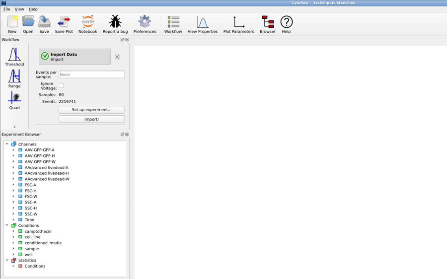
cu click 43 484; sleep 1; cu screenshot /tmp/screen.png
{
"file_path": "/tmp/screen.png"
}/tmp/screen.png

cu click 43 484; sleep 0.5; cu click 43 540; sleep 1; cu screenshot /tmp/screen.png
{
"file_path": "/tmp/screen.png"
}/tmp/screen.png
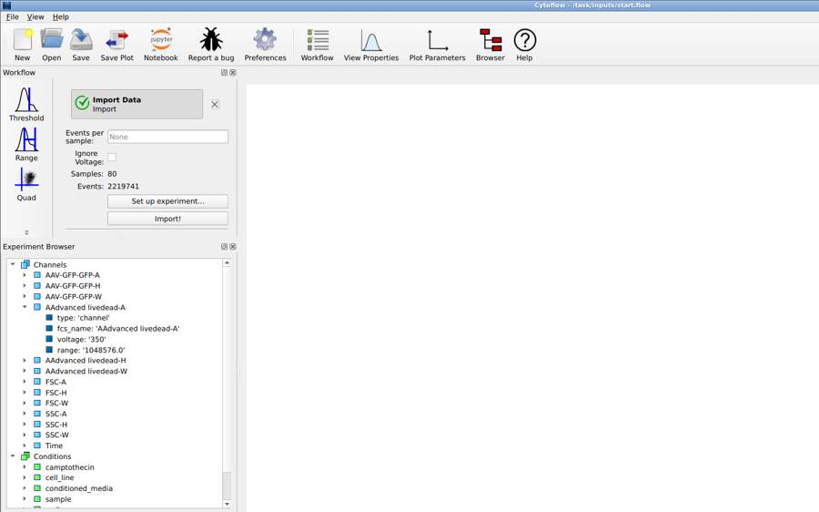
cu click 43 540; cu drag 210 420 210 808; sleep 1; cu click 46 462; sleep 2; cu screenshot /tmp/screen.png
{
"file_path": "/tmp/screen.png"
}/tmp/screen.png
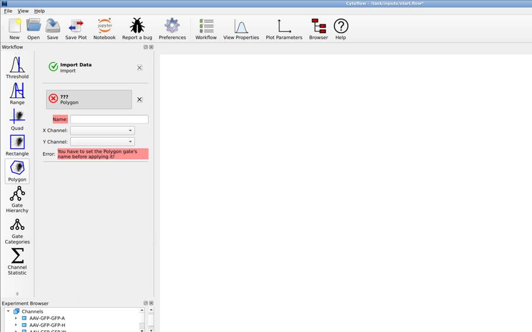
cu click 409 822; sleep 0.5; cu click 295 323; cu type "cells"; cu key Tab; sleep 0.5; cu click 277 354; sleep 1; cu screenshot /tmp/screen.png
{
"file_path": "/tmp/screen.png"
}/tmp/screen.png
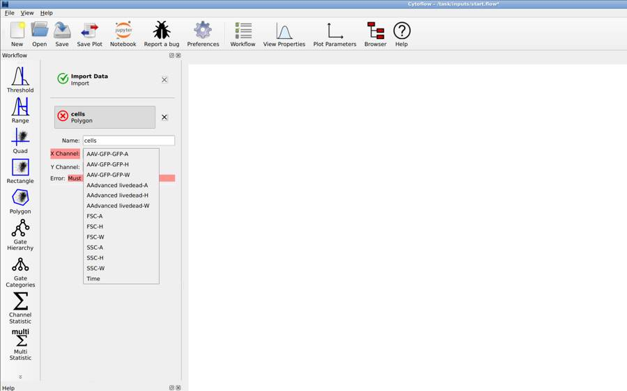
cu click 217 497; sleep 1; cu click 277 384; sleep 1; cu screenshot /tmp/screen.png
{
"file_path": "/tmp/screen.png"
}/tmp/screen.png
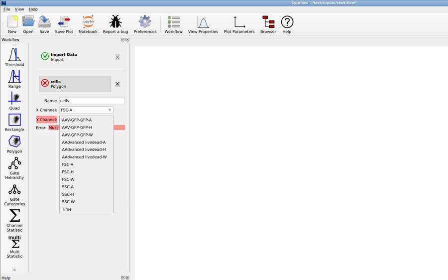
cu click 217 600; sleep 12; cu screenshot /tmp/screen.png
{
"file_path": "/tmp/screen.png"
}/tmp/screen.png
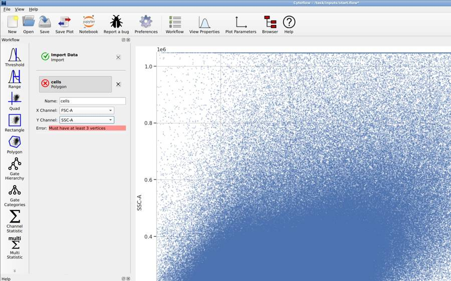
cu click 700 9 double; sleep 3; cu screenshot /tmp/screen.png; which xdotool wmctrl xwininfo 2>/dev/null
{
"file_path": "/tmp/screen.png"
}Exit code 1 /tmp/screen.png /usr/bin/xdotool /usr/bin/xwininfo
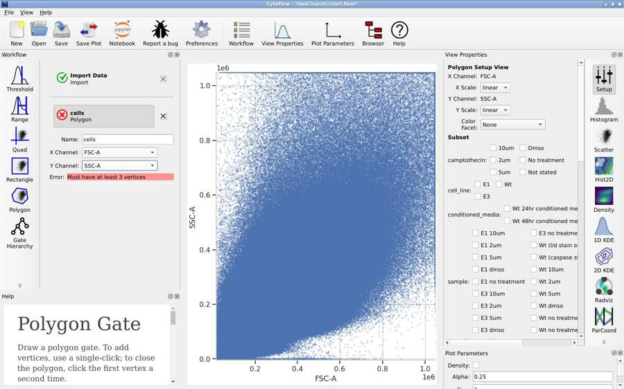
thinking
Channel mapping is confirmed: the stale "AAV-GFP" label is BL1 at 225 V (caspase) and "AAdvanced livedead" is BL2 at 350 V (SYTOX). I'm now setting up the first scatter gate on FSC-A/SSC-A, with the plot switched to density.
cu click 408 686; sleep 1; cu click 1098 845; sleep 15; cu screenshot /tmp/screen.png
{
"file_path": "/tmp/screen.png"
}/tmp/screen.png
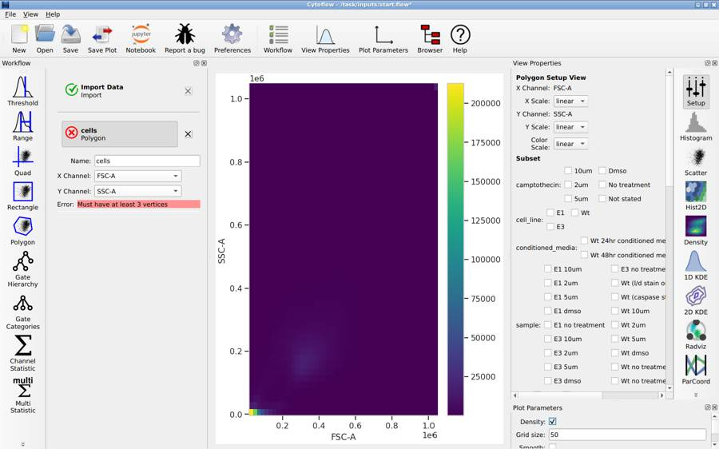
cu click 1142 288; sleep 1; cu screenshot /tmp/screen.png
{
"file_path": "/tmp/screen.png"
}/tmp/screen.png
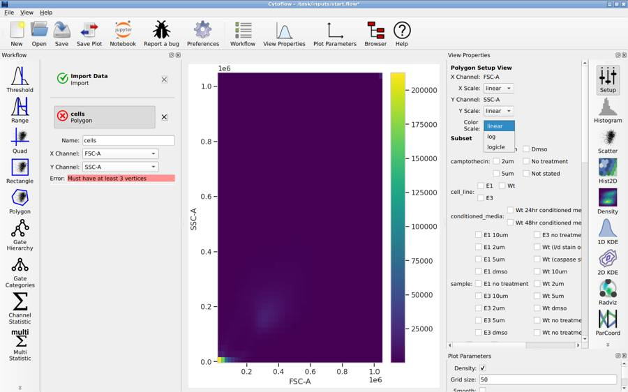
cu click 1127 313; sleep 15; cu screenshot /tmp/screen.png
{
"file_path": "/tmp/screen.png"
}/tmp/screen.png
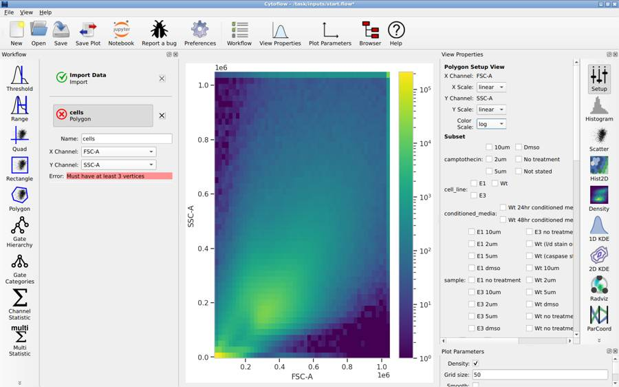
cu click 1255 871 double; cu key ctrl+a; cu type "120"; cu key Return; sleep 15; cu screenshot /tmp/screen.png
{
"file_path": "/tmp/screen.png"
}/tmp/screen.png
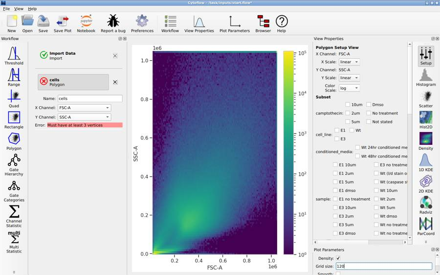
for p in "532 806" "532 641" "591 389" "729 218" "875 218" "875 641" "729 793" "591 809" "532 806"; do cu click $p; sleep 0.7; done; sleep 12; cu screenshot /tmp/screen.png
{
"file_path": "/tmp/screen.png"
}/tmp/screen.png
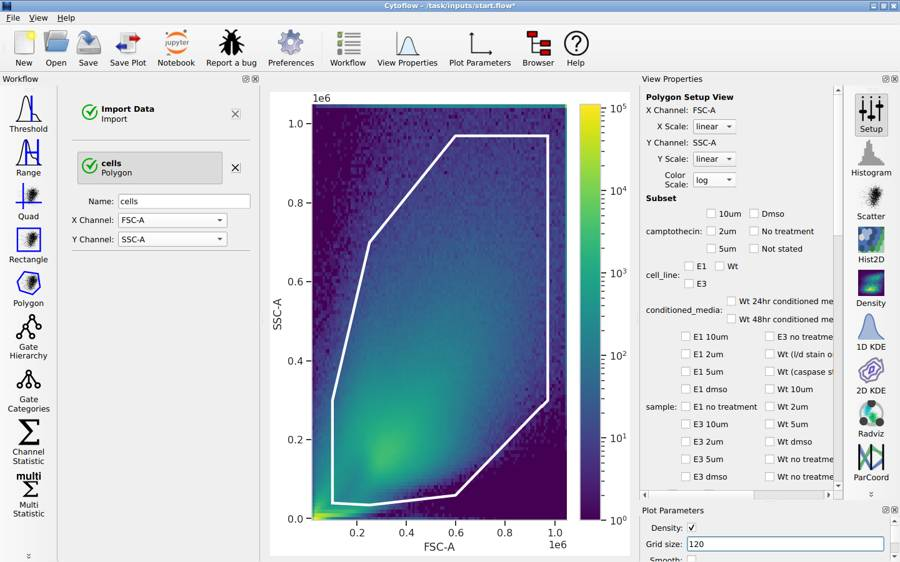
cu click 20 28; sleep 1; cu screenshot /tmp/screen.png
{
"file_path": "/tmp/screen.png"
}/tmp/screen.png
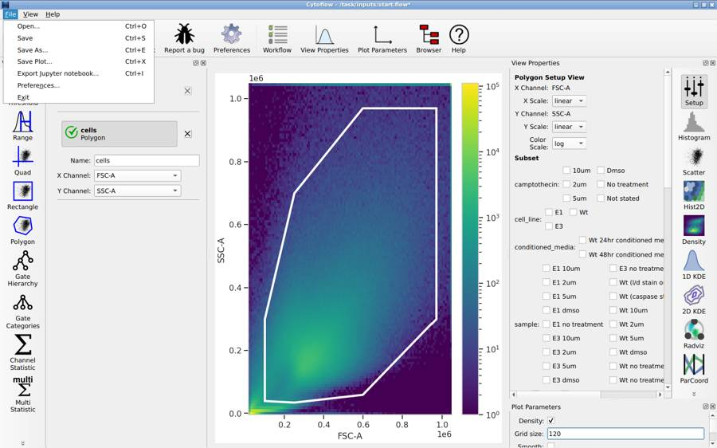
cu click 65 100; sleep 2; cu screenshot /tmp/screen.png
{
"file_path": "/tmp/screen.png"
}/tmp/screen.png
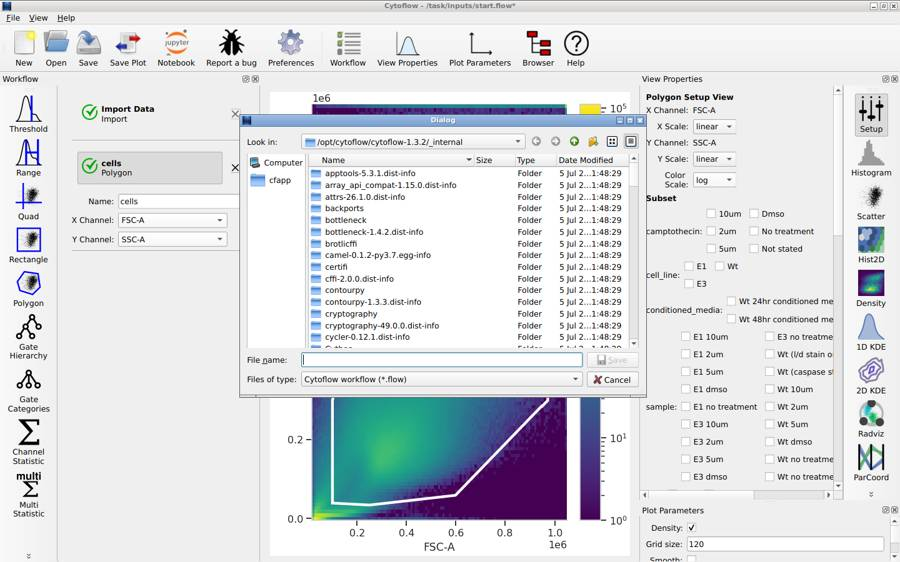
cu click 706 576; cu paste "/task/outputs/workflow.flow"; sleep 0.5; cu key Return; sleep 3; cu screenshot /tmp/screen.png; ls -la /task/outputs; grep -n -A30 "polygon" /task/outputs/workflow.flow | head -60
/tmp/screen.png total 64 drwxrwsrwx 2 agent task 4096 Nov 10 20:10 . drwxr-xr-x 4 root root 4096 Nov 5 22:01 .. -rw-rw-r-- 1 cfapp task 54985 Nov 10 20:10 workflow.flow 1955: current_view: &id002 !polygon-view;3 1956- current_plot: null 1957- huefacet: '' 1958- huescale: log 1959: op: &id001 !polygon;1 1960- name: cells 1961- vertices: 1962- - !!python/tuple 1963- - 99747.21755546817 1964- - 39112.27077770463 1965- - !!python/tuple 1966- - 99747.21755546817 1967- - 299241.22940768057 1968- - !!python/tuple 1969- - 250181.5010200268 1970- - 699312.982237327 1971- - !!python/tuple 1972- - 598555.6311484782 1973- - 969320.2557519856 1974- - !!python/tuple 1975- - 970682.5428765968 1976- - 969320.2557519856 1977- - !!python/tuple 1978- - 970682.5428765968 1979- - 299241.22940768057 1980- - !!python/tuple 1981- - 598555.6311484782 1982- - 58868.900547069876 1983- - !!python/tuple 1984- - 250181.5010200268 1985- - 34173.113335363305 1986- xchannel: FSC-A 1987- xscale: linear 1988- ychannel: SSC-A 1989- yscale: linear 1990: plot_params: !polygon-params;1 1991- alpha: 0.25 1992- col_wrap: null 1993- density: true 1994- despine: true 1995- gridsize: 120 1996- huelabel: '' 1997- legend: true 1998- marker: o 1999- max_quantile: 1.0 2000- min_quantile: 0.001 2001- s: 2 2002- sharex: true 2003- sharey: true 2004- smoothed: false 2005- smoothed_sigma: 1.0 2006- sns_context: notebook 2007- sns_style: whitegrid 2008- title: '' 2009- xlabel: '' 2010- xlim: !!python/tuple 2011- - null 2012- - null 2013- ylabel: '' 2014- ylim: !!python/tuple
cu click 46 462; sleep 2; cu screenshot /tmp/screen.png
{
"file_path": "/tmp/screen.png"
}/tmp/screen.png
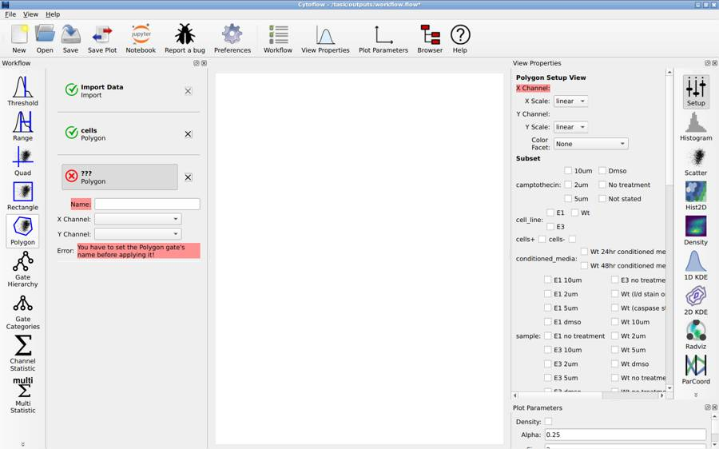
cu click 295 409; cu type "singlets"; cu key Tab; sleep 0.5; cu click 276 439; sleep 1; cu click 217 582; sleep 1; cu click 276 469; sleep 1; cu screenshot /tmp/s1.png; cu click 217 637; sleep 2; cu click 1085 479; sleep 1; cu click 1098 845; sleep 12; cu screenshot /tmp/screen.png
{
"file_path": "/tmp/screen.png"
}/tmp/s1.png /tmp/screen.png
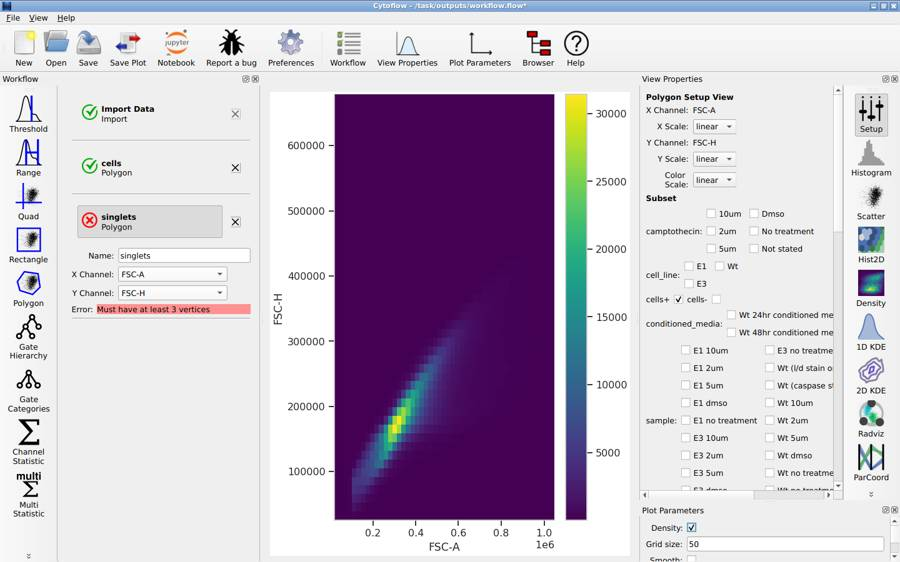
thinking
The cells gate is done and the workflow is saved; I'm now setting up the singlets gate (FSC-A vs FSC-H) on a log colour scale to see the doublet shoulder.
cu click 1142 288; sleep 1; cu click 1127 313; sleep 10; cu click 1255 871 double; cu key ctrl+a; cu type "100"; cu key Return; sleep 12; cu screenshot /tmp/screen.png
{
"file_path": "/tmp/screen.png"
}/tmp/screen.png
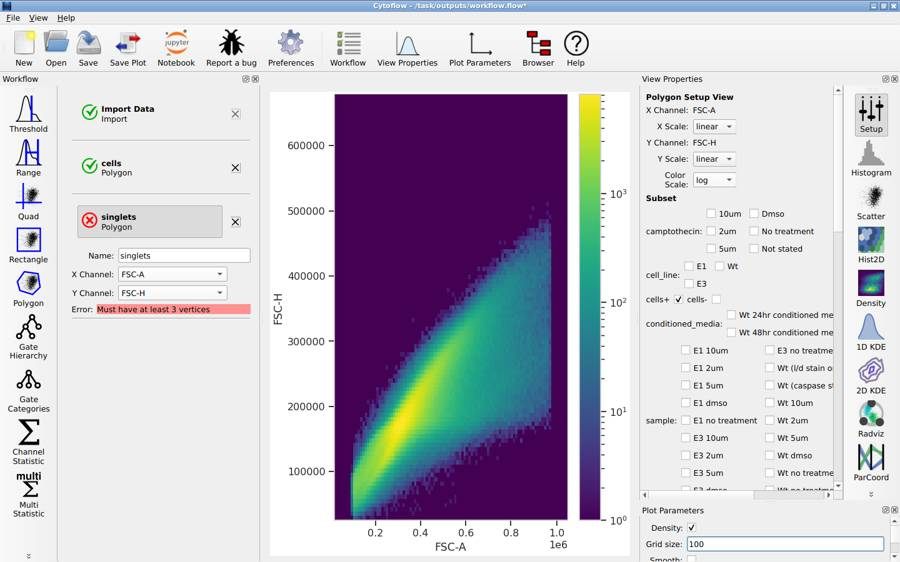
for p in "557 828" "557 745" "709 515" "890 233" "890 442" "745 604" "636 729" "575 807" "557 828"; do cu click $p; sleep 0.7; done; sleep 12; cu screenshot /tmp/screen.png
{
"file_path": "/tmp/screen.png"
}/tmp/screen.png
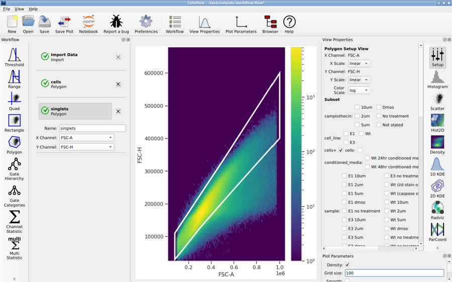
thinking
Both scatter gates are drawn; next I'm checking caspase against SYTOX in the control wells to set the spillover and the live and caspase-positive gates.
cu click 1393 460; sleep 3; cu screenshot /tmp/screen.png
{
"file_path": "/tmp/screen.png"
}/tmp/screen.png
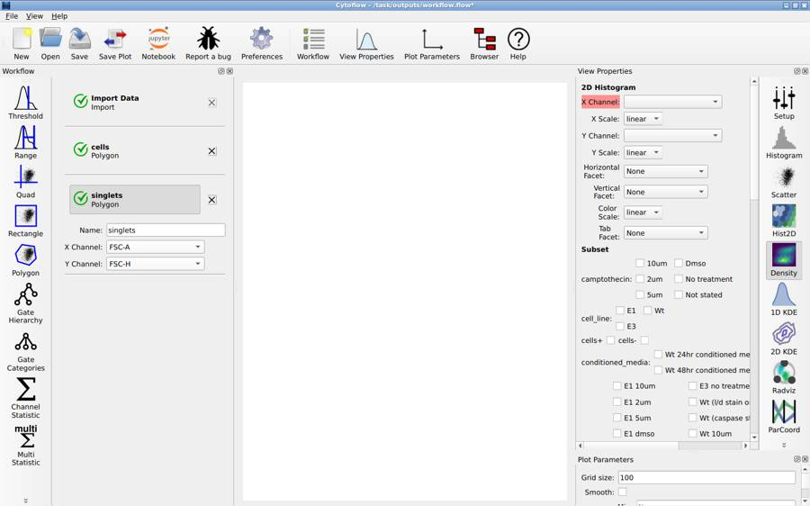
cu click 1206 496; sleep 0.5; cu click 1206 524; sleep 0.5; cu click 1085 605; sleep 0.5; cu click 1142 211; sleep 1; cu screenshot /tmp/screen.png
{
"file_path": "/tmp/screen.png"
}/tmp/screen.png
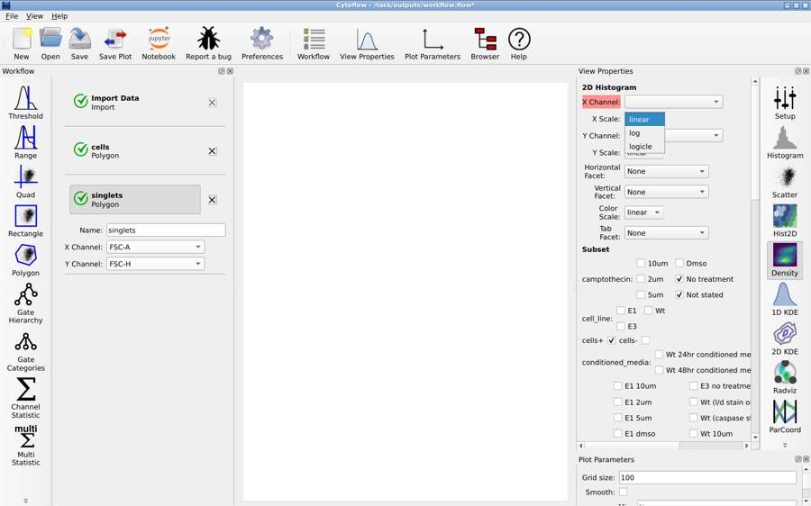
cu click 1137 260; sleep 0.5; cu click 1142 271; sleep 1; cu click 1137 320; sleep 0.5; cu click 1142 378; sleep 1; cu click 1127 403; sleep 0.5; cu click 1182 305; sleep 1; cu screenshot /tmp/screen.png
{
"file_path": "/tmp/screen.png"
}/tmp/screen.png
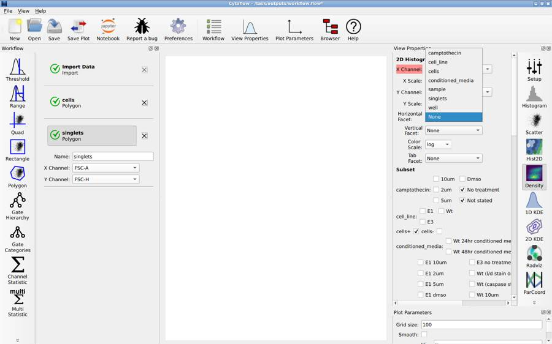
cu click 1130 281; sleep 1; cu click 1195 181; sleep 1; cu screenshot /tmp/screen.png
{
"file_path": "/tmp/screen.png"
}/tmp/screen.png
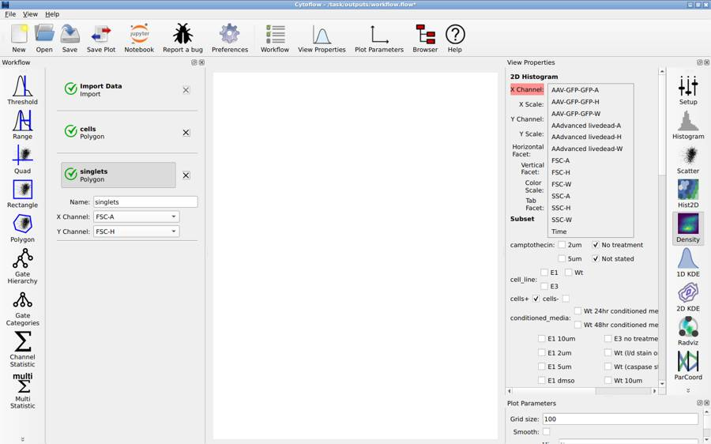
cu click 1165 182; sleep 1; cu click 1195 241; sleep 1; cu screenshot /tmp/s1.png; cu click 1187 314; sleep 10; cu screenshot /tmp/screen.png
{
"file_path": "/tmp/screen.png"
}/tmp/s1.png /tmp/screen.png
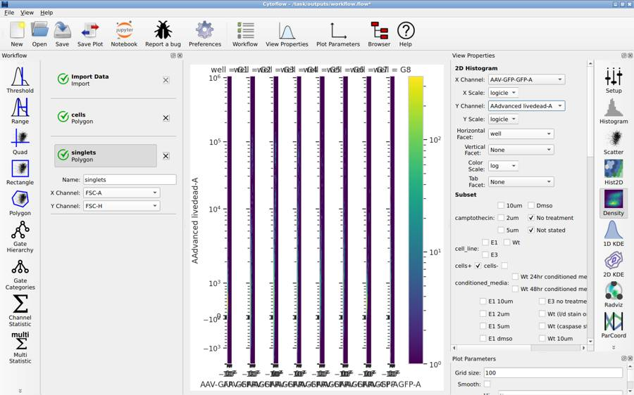
cu drag 1232 803 1232 500; sleep 1; cu screenshot /tmp/screen.png
{
"file_path": "/tmp/screen.png"
}/tmp/screen.png
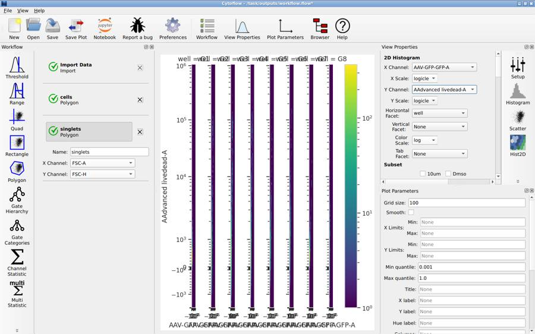
cu scroll 1220 800 down 5; sleep 1; cu screenshot /tmp/screen.png
{
"file_path": "/tmp/screen.png"
}/tmp/screen.png
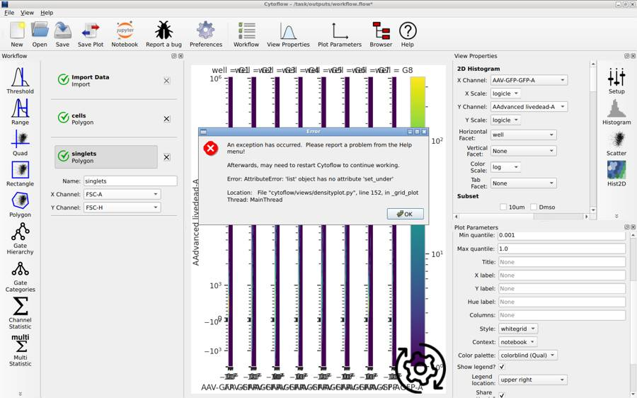
cu click 916 484; sleep 3; cu screenshot /tmp/screen.png
{
"file_path": "/tmp/screen.png"
}/tmp/screen.png
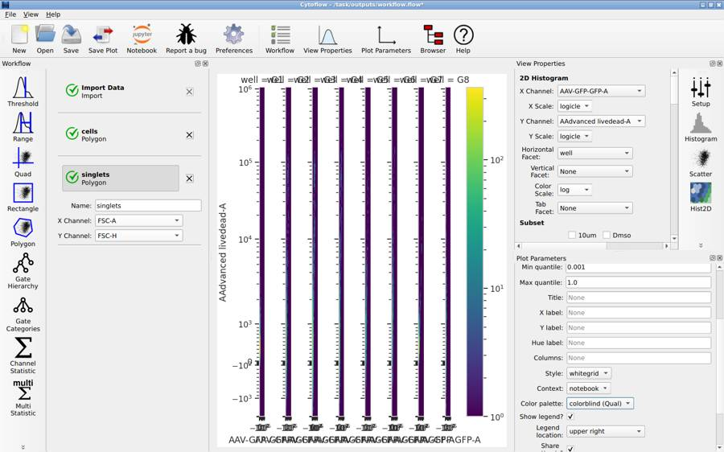
cu click 1193 803; sleep 1; cu screenshot /tmp/screen.png
{
"file_path": "/tmp/screen.png"
}/tmp/screen.png
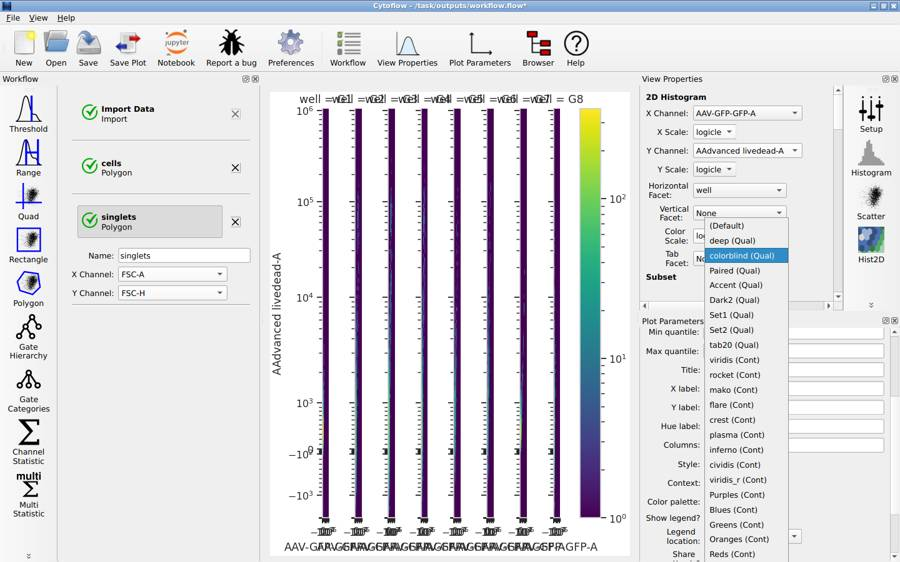
cu click 1163 361; sleep 2; cu click 1270 713; cu type "4"; cu key Return; sleep 12; cu screenshot /tmp/screen.png
{
"file_path": "/tmp/screen.png"
}/tmp/screen.png
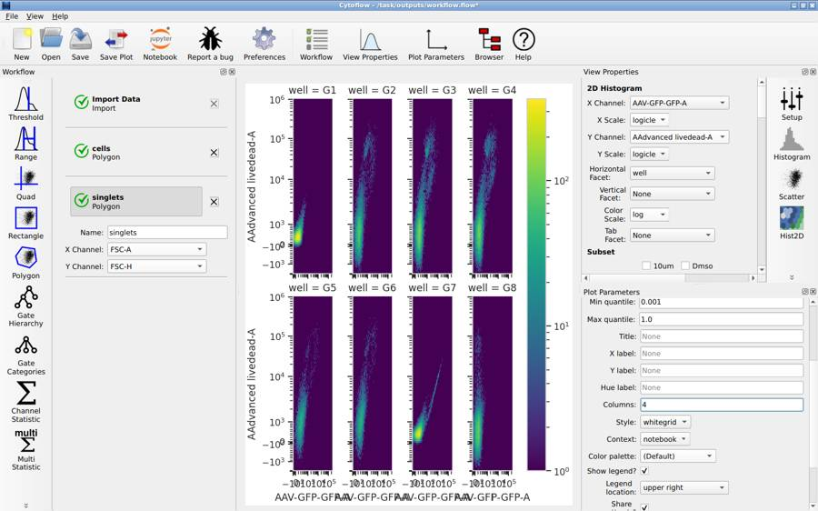
cu click 1182 305; sleep 1; cu screenshot /tmp/screen.png
{
"file_path": "/tmp/screen.png"
}/tmp/screen.png
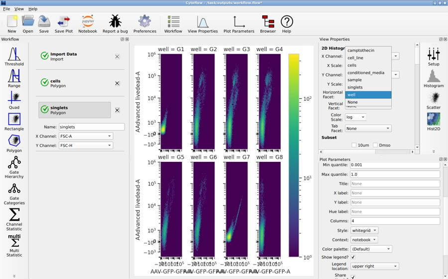
cu click 1133 329; sleep 2; cu click 1182 414; sleep 1; cu screenshot /tmp/screen.png
{
"file_path": "/tmp/screen.png"
}/tmp/screen.png
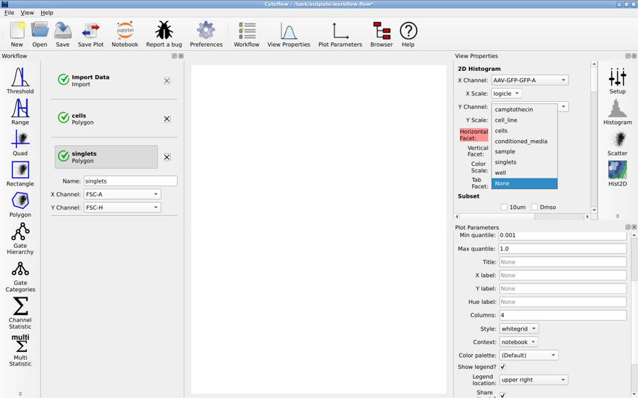
cu click 1130 390; sleep 2; cu click 1270 713 double; cu key ctrl+a; cu key BackSpace; cu key Return; sleep 10; cu screenshot /tmp/screen.png
{
"file_path": "/tmp/screen.png"
}/tmp/screen.png
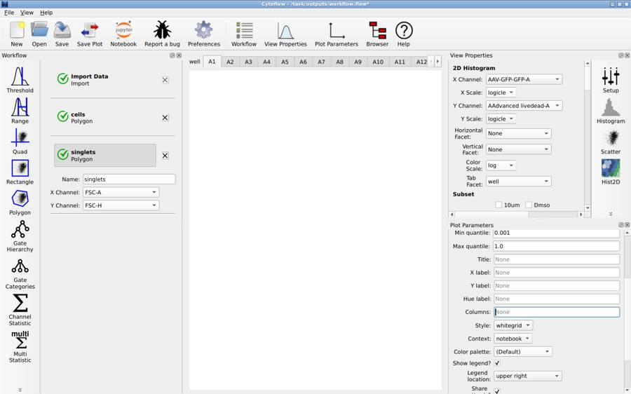
thinking
Control wells look right: the unstained low, the caspase-only spillover diagonal, and the SYTOX-only vertical. I'm now inspecting each well in its own tab and clearing the control-only subset.
cu drag 1232 499 1232 720; sleep 1; cu screenshot /tmp/screen.png
{
"file_path": "/tmp/screen.png"
}/tmp/screen.png
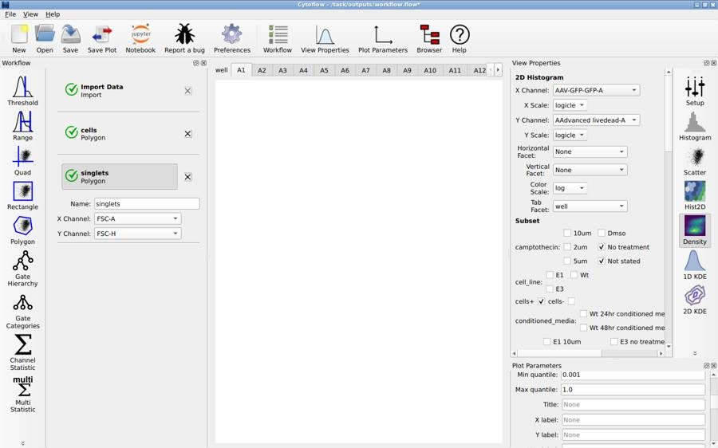
cu click 1206 496; sleep 0.5; cu click 1206 524; sleep 1; cu scroll 1050 600 down 10; sleep 1; cu screenshot /tmp/screen.png
{
"file_path": "/tmp/screen.png"
}/tmp/screen.png
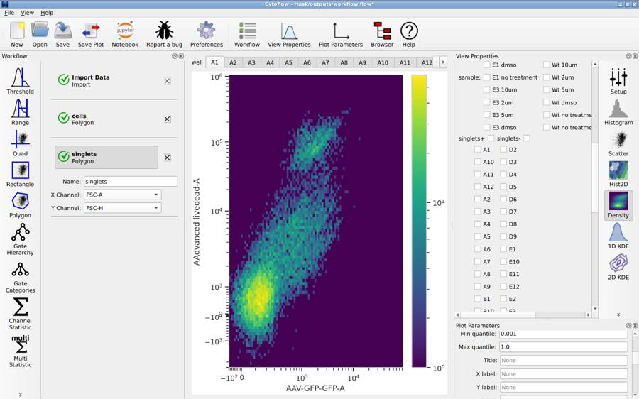
cu click 1106 312; sleep 3; cu click 483 141; sleep 1; for i in $(seq 1 72); do cu key Right; sleep 0.15; done; sleep 6; cu screenshot /tmp/screen.png
{
"file_path": "/tmp/screen.png"
}/tmp/screen.png
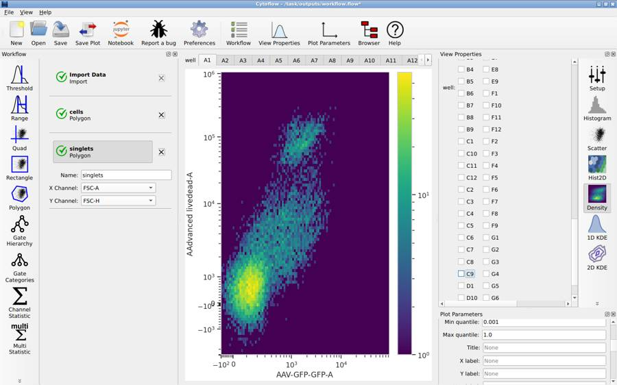
cu click 525 141; sleep 2; cu key Right; sleep 3; cu screenshot /tmp/screen.png
{
"file_path": "/tmp/screen.png"
}/tmp/screen.png
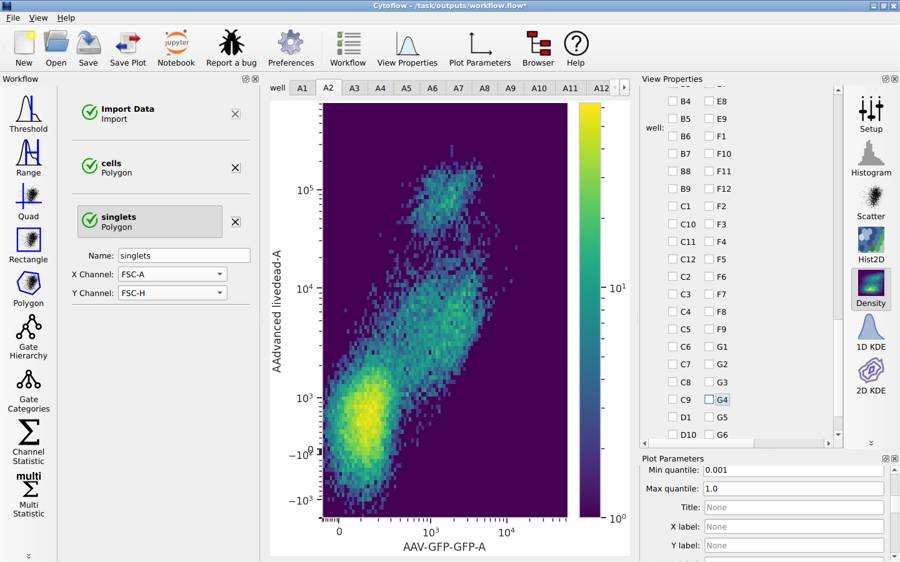
for i in $(seq 1 75); do cu click 999 140; done; sleep 2; cu screenshot /tmp/screen.png
{
"file_path": "/tmp/screen.png"
}/tmp/screen.png
mkdir -p /tmp/shots; cu click 655 141; sleep 5; cu screenshot /tmp/shots/G1.png; cu click 911 141; sleep 5; cu screenshot /tmp/shots/G7.png; cu click 954 141; sleep 5; cu screenshot /tmp/shots/G8.png; cu click 697 141; sleep 5; cu screenshot /tmp/shots/G2.png; python3 -c "
from PIL import Image
ims=[Image.open(f'/tmp/shots/{w}.png').crop((432,150,1010,892)) for w in ['G1','G7','G8','G2']]
W=sum(i.width for i in ims); m=Image.new('RGB',(W,ims[0].height))
x=0
for i in ims: m.paste(i,(x,0)); x+=i.width
m.save('/tmp/shots/ctrl.png')
"{
"file_path": "/tmp/shots/ctrl.png"
}/tmp/shots/G1.png /tmp/shots/G7.png /tmp/shots/G8.png /tmp/shots/G2.png
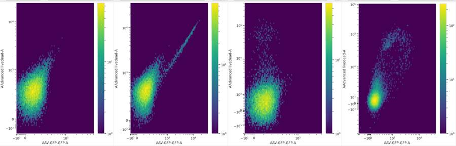
cu click 46 250; sleep 2; cu screenshot /tmp/screen.png
{
"file_path": "/tmp/screen.png"
}/tmp/screen.png
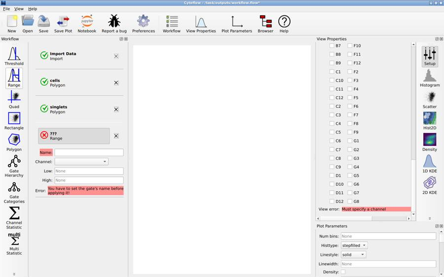
cu click 288 495; cu type "live"; cu key Tab; sleep 0.5; cu click 264 525; sleep 1; cu screenshot /tmp/screen.png
{
"file_path": "/tmp/screen.png"
}/tmp/screen.png
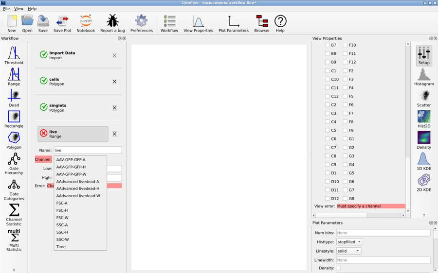
cu click 255 598; sleep 8; cu scroll 1050 400 up 40; sleep 1; cu screenshot /tmp/screen.png
{
"file_path": "/tmp/screen.png"
}/tmp/screen.png
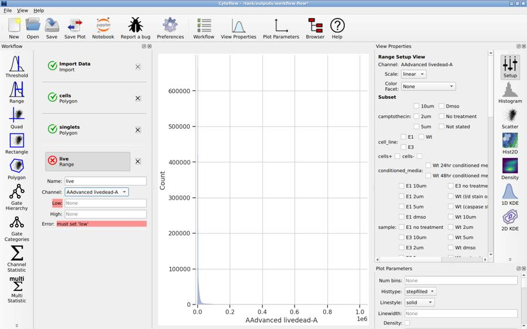
cu click 1130 203; sleep 1; cu click 1125 251; sleep 3; cu click 1085 427; sleep 2; cu scroll 1050 600 down 6; sleep 1; cu screenshot /tmp/screen.png
{
"file_path": "/tmp/screen.png"
}/tmp/screen.png
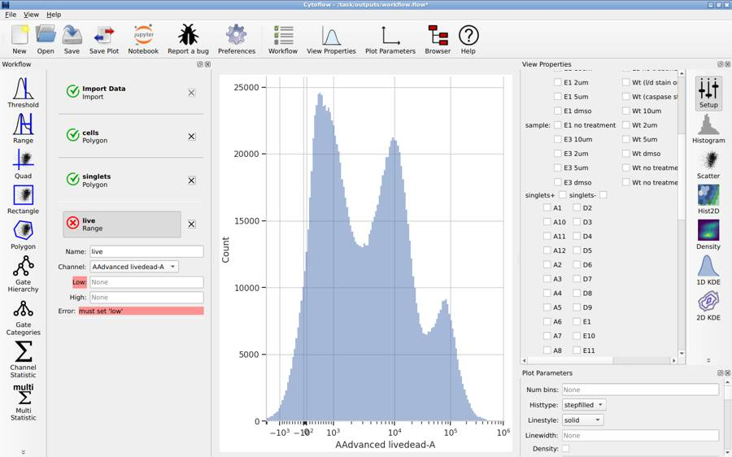
cu click 1106 384; sleep 3; cu click 288 555; cu type "-1000000"; cu key Tab; sleep 1; cu click 288 585; cu type "30000"; cu key Tab; sleep 10; cu screenshot /tmp/screen.png
{
"file_path": "/tmp/screen.png"
}/tmp/screen.png
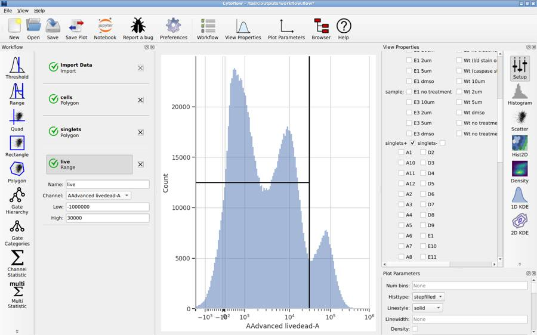
cu click 46 180; sleep 2; cu screenshot /tmp/screen.png
{
"file_path": "/tmp/screen.png"
}/tmp/screen.png
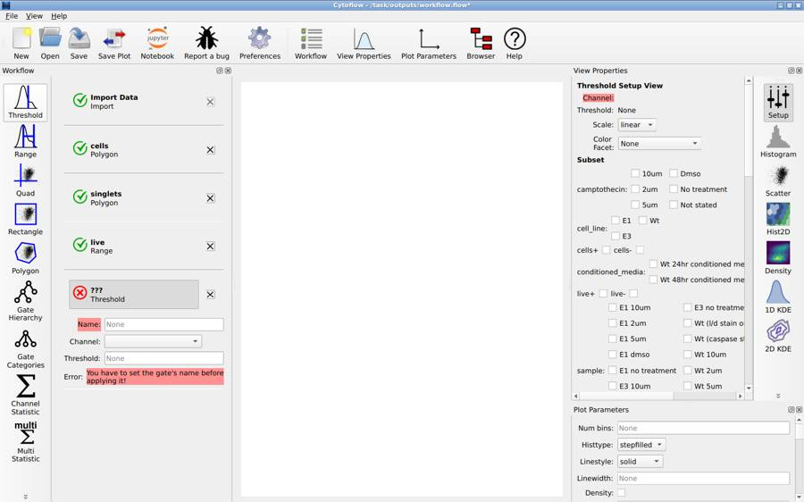
cu click 293 581; cu type "caspase_pos"; cu key Tab; sleep 0.5; cu click 274 612; sleep 1; cu screenshot /tmp/s1.png; cu click 233 613; sleep 6; cu click 1140 224; sleep 1; cu click 1135 272; sleep 3; cu click 1085 448; sleep 1; cu click 1080 526; sleep 1; cu click 1180 257; sleep 1; cu screenshot /tmp/screen.png
{
"file_path": "/tmp/screen.png"
}/tmp/s1.png /tmp/screen.png
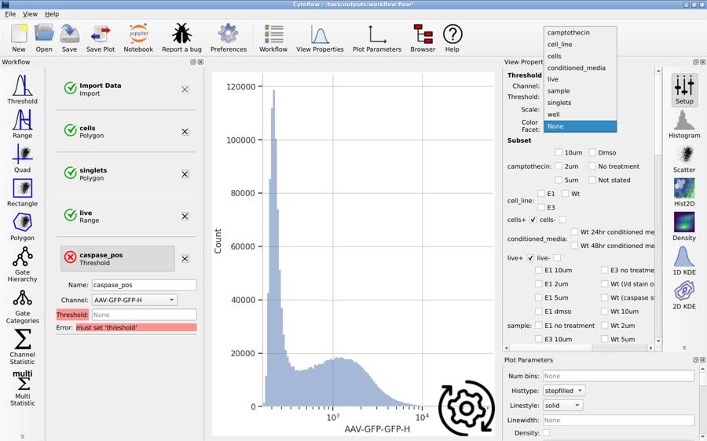
cu click 1158 66; sleep 3; cu click 274 612; sleep 1; cu screenshot /tmp/screen.png
{
"file_path": "/tmp/screen.png"
}/tmp/screen.png
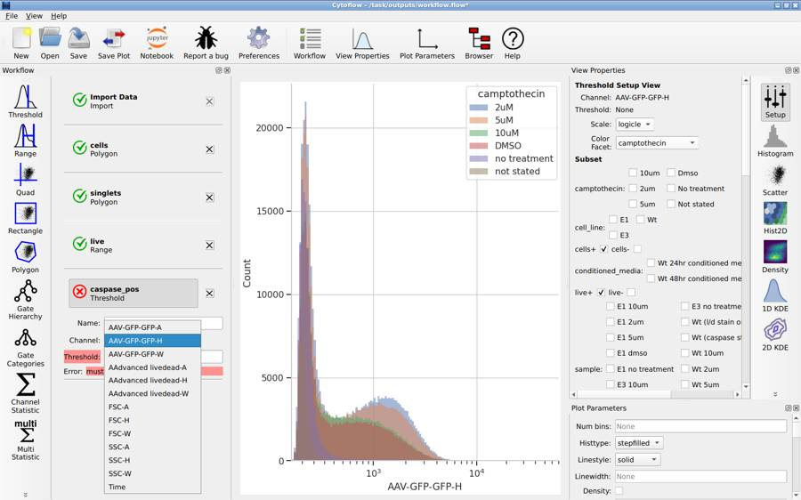
cu click 243 589; sleep 5; cu scroll 1050 600 down 6; sleep 1; cu screenshot /tmp/screen.png
{
"file_path": "/tmp/screen.png"
}/tmp/screen.png
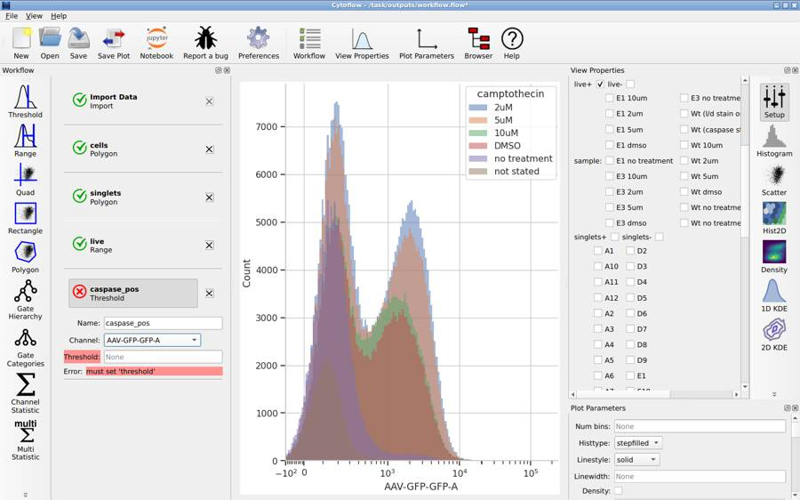
cu click 1106 426; sleep 3; cu click 293 642; cu type "700"; cu key Tab; sleep 10; cu screenshot /tmp/screen.png
{
"file_path": "/tmp/screen.png"
}/tmp/screen.png
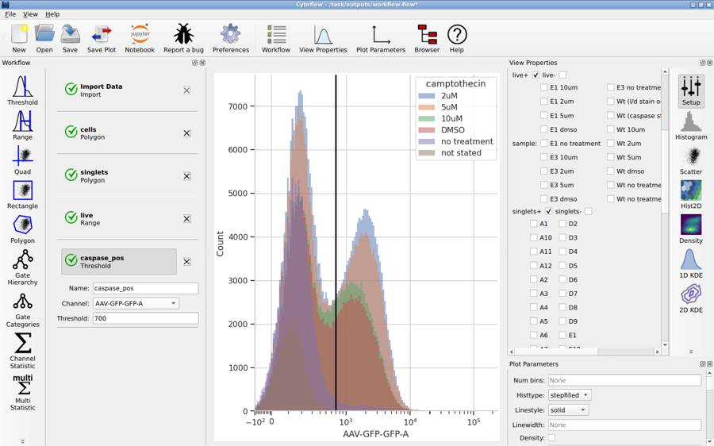
thinking
All four gates are set, with caspase_pos at 700 on BL1 at the valley between the peaks. I'm saving and then setting up the per-well count export.
cu key ctrl+s; sleep 3; ls -la /task/outputs; cu click 46 700; sleep 2; cu screenshot /tmp/screen.png
{
"file_path": "/tmp/screen.png"
}total 124 drwxrwsrwx 2 agent task 4096 Nov 10 20:10 . drwxr-xr-x 4 root root 4096 Nov 5 22:01 .. -rw-rw-r-- 1 cfapp task 117132 Nov 10 20:20 workflow.flow /tmp/screen.png
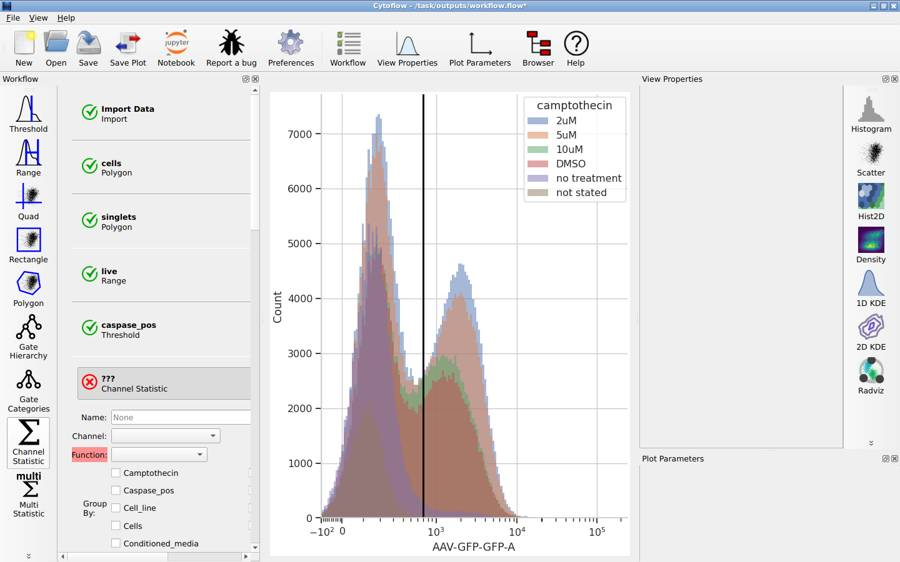
cu drag 421 510 620 510; sleep 2; cu scroll 250 400 down 10; sleep 1; cu screenshot /tmp/screen.png
{
"file_path": "/tmp/screen.png"
}/tmp/screen.png
cu scroll 250 400 up 3; sleep 1; cu screenshot /tmp/screen.png
{
"file_path": "/tmp/screen.png"
}/tmp/screen.png
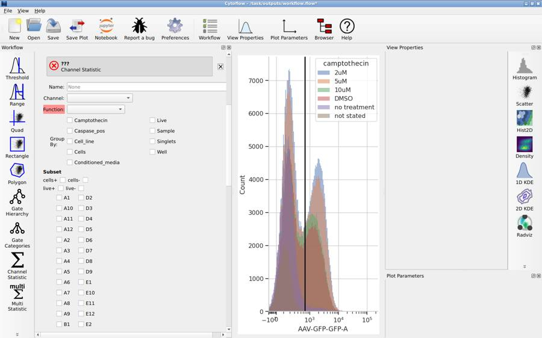
cu click 390 231; cu type "n_gates"; cu key Tab; sleep 0.5; cu click 254 291; sleep 1; cu screenshot /tmp/screen.png
{
"file_path": "/tmp/screen.png"
}/tmp/screen.png
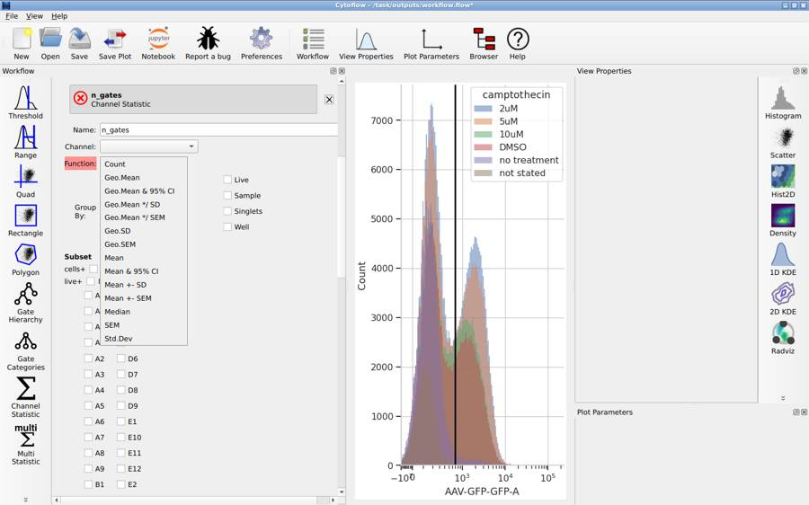
cu click 205 292; sleep 1; cu click 264 261; sleep 1; cu screenshot /tmp/screen.png
{
"file_path": "/tmp/screen.png"
}/tmp/screen.png
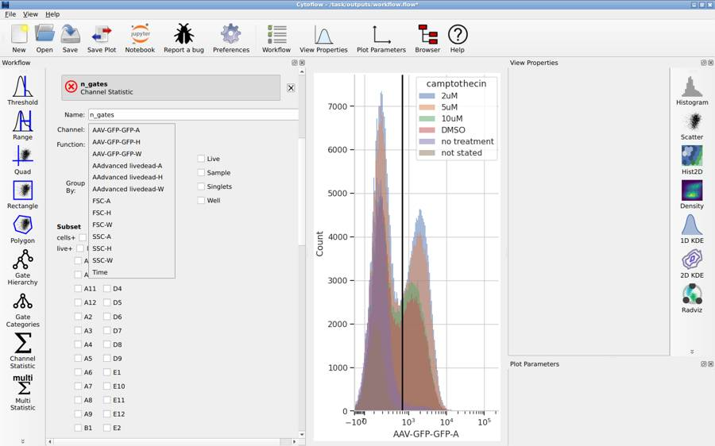
cu click 204 405; sleep 2; cu click 405 404; sleep 1; cu click 185 404; sleep 1; cu click 405 376; sleep 1; cu click 405 320; sleep 8; cu screenshot /tmp/screen.png
{
"file_path": "/tmp/screen.png"
}/tmp/screen.png
cu click 1393 709; sleep 1; cu screenshot /tmp/screen.png
{
"file_path": "/tmp/screen.png"
}/tmp/screen.png
cu click 1405 262; sleep 4; cu screenshot /tmp/screen.png
{
"file_path": "/tmp/screen.png"
}/tmp/screen.png
cu click 1142 181; sleep 1; cu screenshot /tmp/screen.png
{
"file_path": "/tmp/screen.png"
}/tmp/screen.png
cu click 1128 207; sleep 5; cu screenshot /tmp/screen.png
{
"file_path": "/tmp/screen.png"
}/tmp/screen.png
sleep 5; cu click 1142 211; sleep 3; cu screenshot /tmp/screen.png
{
"file_path": "/tmp/screen.png"
}/tmp/screen.png
mkdir -p /tmp/exports && chmod 777 /tmp/exports; cu click 706 567; cu paste "/tmp/exports/n_gates.csv"; sleep 0.5; cu key Return; sleep 3; ls -la /tmp/exports; head -20 /tmp/exports/n_gates.csv; wc -l /tmp/exports/n_gates.csv
total 20 drwxrwxrwx 2 root root 4096 Nov 10 20:22 . drwxrwxrwx 10 root root 4096 Nov 10 20:22 .. -rw-rw-r-- 1 cfapp cfapp 10081 Nov 10 20:22 n_gates.csv well,cells,singlets,live,FSC-A A1,0,0,0,584.0 A1,0,0,1,8146.0 A1,0,1,0,236.0 A1,0,1,1,2333.0 A1,1,0,0,386.0 A1,1,0,1,1440.0 A1,1,1,0,1898.0 A1,1,1,1,16305.0 A10,0,0,0,382.0 A10,0,0,1,10388.0 A10,0,1,0,83.0 A10,0,1,1,3043.0 A10,1,0,0,471.0 A10,1,0,1,2201.0 A10,1,1,0,2973.0 A10,1,1,1,22757.0 A11,0,0,0,372.0 A11,0,0,1,11155.0 A11,0,1,0,166.0 636 /tmp/exports/n_gates.csv
cu click 185 348; sleep 10; cu click 1142 211; sleep 3; cu click 706 567; cu paste "/tmp/exports/n_gates5.csv"; sleep 0.5; cu key Return; sleep 3; head -5 /tmp/exports/n_gates5.csv; wc -l /tmp/exports/n_gates5.csv; cu screenshot /tmp/screen.png
well,cells,singlets,live,caspase_pos,FSC-A A1,0,0,0,0,20.0 A1,0,0,0,1,564.0 A1,0,0,1,0,7966.0 A1,0,0,1,1,180.0 1175 /tmp/exports/n_gates5.csv /tmp/screen.png
cu key ctrl+s; sleep 3; mkdir -p /tmp/work; cat > /tmp/work/tab.py <<'EOF'
import pandas as pd, sys
d=pd.read_csv('/tmp/exports/n_gates5.csv')
d=d.rename(columns={'FSC-A':'n'})
lay=pd.read_csv('/task/inputs/plate_layout.csv')
def cnt(g,mask): return int(g.loc[mask,'n'].sum())
rows=[]
for w,g in d.groupby('well'):
c=g.cells==1; s=c&(g.singlets==1); l=s&(g.live==1); p=l&(g.caspase_pos==1)
rows.append(dict(well=w,all=cnt(g,g.n>=0),cells=cnt(g,c),singlets=cnt(g,s),live=cnt(g,l),casp=cnt(g,p),casp_singlets=cnt(g,s&(g.caspase_pos==1))))
r=pd.DataFrame(rows).merge(lay,on='well')
r['pct_cells']=100*r.cells/r['all']; r['pct_sing']=100*r.singlets/r.cells; r['pct_live']=100*r.live/r.singlets; r['pct_casp']=100*r.casp/r.live; r['pct_casp_s']=100*r.casp_singlets/r.singlets
r['row']=r.well.str[0]; r['col']=r.well.str[1:].astype(int)
r=r.sort_values(['row','col'])
pd.set_option('display.width',250); pd.set_option('display.max_rows',200)
print(r[['well','sample','conditioned_media','all','cells','singlets','live','casp','pct_cells','pct_sing','pct_live','pct_casp','pct_casp_s']].round(1).to_string(index=False))
r.to_csv('/tmp/work/perwell.csv',index=False)
EOF
python3 /tmp/work/tab.pywell sample conditioned_media all cells singlets live casp pct_cells pct_sing pct_live pct_casp pct_casp_s A1 WT 10uM WT 24hr conditioned media 31328 20029 18203 16305 2964 63.9 90.9 89.6 18.2 25.9 A2 WT 5uM WT 24hr conditioned media 40169 28161 25348 23353 5037 70.1 90.0 92.1 21.6 27.1 A3 WT 2uM WT 24hr conditioned media 47337 31198 28089 25633 5664 65.9 90.0 91.3 22.1 27.8 A4 WT DMSO WT 24hr conditioned media 33079 23151 20894 18476 5188 70.0 90.3 88.4 28.1 36.1 A5 WT 10uM WT 48hr conditioned media 34963 24429 22069 19995 4541 69.9 90.3 90.6 22.7 29.5 A6 WT 5uM WT 48hr conditioned media 33431 24507 22393 20589 4404 73.3 91.4 91.9 21.4 27.2 A7 WT 2uM WT 48hr conditioned media 36445 27014 24690 22486 4561 74.1 91.4 91.1 20.3 27.0 A8 WT DMSO WT 48hr conditioned media 22867 16609 15200 13467 2973 72.6 91.5 88.6 22.1 30.6 A9 WT 10uM no conditioned media 40034 24160 21505 19365 3635 60.3 89.0 90.0 18.8 26.6 A10 WT 5uM no conditioned media 42298 28402 25730 22757 3992 67.1 90.6 88.4 17.5 26.6 A11 WT 2uM no conditioned media 43376 28229 25740 22614 4301 65.1 91.2 87.9 19.0 28.4 A12 WT DMSO no conditioned media 30724 18945 16648 14502 2795 61.7 87.9 87.1 19.3 29.5 B1 E1 10uM WT 24hr conditioned media 18757 13821 12393 8894 5925 73.7 89.7 71.8 66.6 76.0 B2 E1 5uM WT 24hr conditioned media 32477 22813 20560 17694 12149 70.2 90.1 86.1 68.7 73.0 B3 E1 2uM WT 24hr conditioned media 40067 26839 24041 20284 15031 67.0 89.6 84.4 74.1 78.1 B4 E1 DMSO WT 24hr conditioned media 19965 13245 11545 8920 5943 66.3 87.2 77.3 66.6 74.2 B5 E1 10uM WT 48hr conditioned media 17852 13835 12613 9807 6691 77.5 91.2 77.8 68.2 75.3 B6 E1 5uM WT 48hr conditioned media 31705 22499 20258 17217 11958 71.0 90.0 85.0 69.5 74.0 B7 E1 2uM WT 48hr conditioned media 35417 24070 21878 18006 13038 68.0 90.9 82.3 72.4 77.2 B8 E1 DMSO WT 48hr conditioned media 26222 16828 14551 12499 9031 64.2 86.5 85.9 72.3 76.2 B9 E1 10uM no conditioned media 34411 21852 19400 18227 9483 63.5 88.8 94.0 52.0 54.9 B10 E1 5uM no conditioned media 40098 25444 22570 21775 11545 63.5 88.7 96.5 53.0 54.7 B11 E1 2uM no conditioned media 41005 24180 21624 20340 12414 59.0 89.4 94.1 61.0 63.3 B12 E1 DMSO no conditioned media 31680 15983 13623 12708 7158 50.5 85.2 93.3 56.3 59.2 C1 E3 10uM WT 24hr conditioned media 17681 9949 8068 7019 3460 56.3 81.1 87.0 49.3 55.9 C2 E3 5uM WT 24hr conditioned media 25455 12405 10062 8965 4688 48.7 81.1 89.1 52.3 57.4 C3 E3 2uM WT 24hr conditioned media 21098 11926 10098 9109 3906 56.5 84.7 90.2 42.9 48.4 C4 E3 DMSO WT 24hr conditioned media 18113 9340 7229 6355 3190 51.6 77.4 87.9 50.2 56.2 C5 E3 10uM WT 48hr conditioned media 18729 9300 7213 6461 2725 49.7 77.6 89.6 42.2 48.2 C6 E3 5uM WT 48hr conditioned media 21716 10830 8635 7893 3731 49.9 79.7 91.4 47.3 51.8 C7 E3 2uM WT 48hr conditioned media 22874 11666 9742 9153 3630 51.0 83.5 94.0 39.7 43.3 C8 E3 DMSO WT 48hr conditioned media 18604 9568 7464 6705 2675 51.4 78.0 89.8 39.9 46.0 C9 E3 10uM no conditioned media 22962 13354 11561 11002 1996 58.2 86.6 95.2 18.1 22.0 C10 E3 5uM no conditioned media 15794 9913 8811 8538 1032 62.8 88.9 96.9 12.1 14.7 C11 E3 2uM no conditioned media 19854 12677 11578 11299 1242 63.9 91.3 97.6 11.0 12.9 C12 E3 DMSO no conditioned media 23104 13452 11726 11375 2130 58.2 87.2 97.0 18.7 21.0 D1 WT 10uM WT 24hr conditioned media 29965 19567 18084 16340 5437 65.3 92.4 90.4 33.3 39.7 D2 WT 5uM WT 24hr conditioned media 42557 28767 26264 24272 6245 67.6 91.3 92.4 25.7 31.3 D3 WT 2uM WT 24hr conditioned media 44711 29696 27085 24710 7125 66.4 91.2 91.2 28.8 35.0 D4 WT DMSO WT 24hr conditioned media 26104 17600 15693 13453 4698 67.4 89.2 85.7 34.9 44.2 D5 … [5,825 more characters not shown]
cu click 1393 390; sleep 3; cu screenshot /tmp/screen.png
{
"file_path": "/tmp/screen.png"
}/tmp/screen.png
thinking
First-pass results look reasonable, with controls behaving and the KO lines running higher than WT. Before relying on them I'm running a per-well QC pass across all 80 wells, checking for clogs, dry runs and drift.
cu click 1142 271; sleep 1; cu click 1137 320; sleep 1; cu click 1142 378; sleep 1; cu click 1127 403; sleep 1; cu click 1182 414; sleep 1; cu screenshot /tmp/screen.png
{
"file_path": "/tmp/screen.png"
}/tmp/screen.png
cu click 1130 390; sleep 2; cu click 1195 181; sleep 1; cu screenshot /tmp/screen.png
{
"file_path": "/tmp/screen.png"
}/tmp/screen.png
cu click 1132 469; sleep 1; cu click 1195 241; sleep 1; cu screenshot /tmp/screen.png
{
"file_path": "/tmp/screen.png"
}/tmp/screen.png
cu click 1165 242; sleep 2; cu drag 620 510 421 510; sleep 6; cu screenshot /tmp/screen.png
{
"file_path": "/tmp/screen.png"
}/tmp/screen.png
cd /tmp/work; python3 -c "
from PIL import Image
im=Image.open('/tmp/screen.png').convert('L')
row=[im.getpixel((x,133)) for x in range(432,1010)]
print(''.join('#' if v<200 else ('+' if v<235 else '.') for v in row))
row=[im.getpixel((x,150)) for x in range(432,1010)]
print(''.join('#' if v<200 else ('+' if v<235 else '.') for v in row))
"...............................#+........................................#++++++++++++++++++++++++++++++++++++++++#+++++++++++++++++++++++++++++++++++++++++#+++++++++++++++++++++++++++++++++++++++++#++++++++++++++++++++++++++++++++++++++++#+++++++++++++++++++++++++++++++++++++++++#+++++++++++++++++++++++++++++++++++++++++#++++++++++++++++++++++++++++++++++++++++#+++++++++++++++++++++++++++++++++++++++++#+++++++++++++++++++++++++++++++++++++++++++++++++#+++++++++++++++++++++++++++++++++++++++++++++++++#++++++++++++++++++++++++++++++++++++#..............+#..............+#.. ...............................#+.......................................+#++++++++++++++++++++++++++++++++++++++++#+++++++++++++++++++++++++++++++++++++++++#+++++++++++++++++++++++++++++++++++++++++#++++++++++++++++++++++++++++++++++++++++#+++++++++++++++++++++++++++++++++++++++++#+++++++++++++++++++++++++++++++++++++++++#++++++++++++++++++++++++++++++++++++++++#+++++++++++++++++++++++++++++++++++++++++#+++++++++++++++++++++++++++++++++++++++++++++++++#+++++++++++++++++++++++++++++++++++++++++++++++++#++++++++++++++++++++++++++++++++++++#..............+#..............+#.. Shell cwd was reset to /task
mkdir -p /tmp/work /tmp/shots/time; cat > /tmp/work/tabs.py <<'EOF'
import subprocess, time, sys
from PIL import Image, ImageChops
X0,X1=432,975
def cu(*a): subprocess.run(['cu',*map(str,a)],check=True,stdout=subprocess.DEVNULL)
def shot(p='/tmp/work/_s.png'):
cu('screenshot',p); return Image.open(p).convert('RGB')
def tabs(im):
g=im.convert('L')
row=[g.getpixel((x,133)) for x in range(X0,X1)]
bounds=[X0+i for i,v in enumerate(row) if v<200]
segs=[]
for a,b in zip(bounds[:-1],bounds[1:]):
if b-a<25: continue
mid=sum(row[a-X0+3:b-X0-2])/max(1,(b-a-5))
segs.append((a,b,mid>245))
return segs
def wait_plot():
prev=None
for k in range(40):
time.sleep(1.2)
im=shot()
crop=im.crop((432,155,1010,892))
if prev is not None and ImageChops.difference(prev,crop).getbbox() is None:
# check not blank
ex=crop.convert('L').getextrema()
if ex[0]<200: return im
prev=crop
return im
wells=[f'{r}{c}' for r in 'ABCDEF' for c in range(1,13)]+[f'G{c}' for c in range(1,9)]
outdir=sys.argv[1]; start=int(sys.argv[2]) if len(sys.argv)>2 else 0
# assumes tab index `start` is currently selected & visible
im=wait_plot()
for i in range(start,len(wells)):
im.crop((432,125,1010,892)).save(f'{outdir}/{wells[i]}.png')
if i==len(wells)-1: break
# move to next
for attempt in range(30):
segs=tabs(im)
sel=[k for k,s in enumerate(segs) if s[2]]
if sel and sel[0]+1<len(segs):
a,b,_=segs[sel[0]+1]
cu('click',(a+b)//2,141); break
cu('click',999,140); time.sleep(0.4); im=shot()
else:
print('failed at',i); sys.exit(1)
time.sleep(0.5)
im=wait_plot()
print('done')
EOF
cu click 483 141; sleep 1; cd /tmp/work && timeout 900 python3 tabs.py /tmp/shots/time 0; ls /tmp/shots/time | wc -lfailed at 78 79 Shell cwd was reset to /task
cat > /tmp/work/montage.py <<'EOF'
import sys
from PIL import Image, ImageDraw
d=sys.argv[1]; out=sys.argv[2]
rows=sys.argv[3:] if len(sys.argv)>3 else list('ABCDEFG')
for r in rows:
n=12 if r!='G' else 8
ims=[]
for c in range(1,n+1):
try: im=Image.open(f'{d}/{r}{c}.png')
except Exception: continue
im=im.crop((0,30,im.width,im.height)).resize((im.width//2,(im.height-30)//2))
ImageDraw.Draw(im).text((120,2),f'{r}{c}',fill=(255,0,0))
ims.append(im)
w,h=ims[0].size; per=6
m=Image.new('RGB',(w*per,h*((len(ims)+per-1)//per)),'white')
for i,im in enumerate(ims): m.paste(im,((i%per)*w,(i//per)*h))
m.save(f'{out}_{r}.png')
EOF
python3 /tmp/work/montage.py /tmp/shots/time /tmp/shots/time_m{
"file_path": "/tmp/shots/time_m_A.png"
}(Bash completed with no output)
{
"file_path": "/tmp/shots/time_m_B.png"
}{
"file_path": "/tmp/shots/time_m_C.png"
}{
"file_path": "/tmp/shots/time_m_D.png"
}{
"file_path": "/tmp/shots/time_m_E.png"
}{
"file_path": "/tmp/shots/time_m_F.png"
}{
"file_path": "/tmp/shots/time_m_G.png"
}cu screenshot /tmp/screen.png; python3 -c "
from PIL import Image
im=Image.open('/tmp/screen.png').crop((432,120,1010,160)); im=im.resize((im.width*2,im.height*2)); im.save('/tmp/strip.png')"/tmp/screen.png
{
"file_path": "/tmp/strip.png"
}cu click 954 141; sleep 6; cu screenshot /tmp/screen.png; python3 -c "
from PIL import Image
Image.open('/tmp/screen.png').crop((432,125,1010,892)).save('/tmp/shots/time/G8.png')"{
"file_path": "/tmp/shots/time/G8.png"
}/tmp/screen.png
cu click 1195 181; sleep 1; cu screenshot /tmp/screen.png
{
"file_path": "/tmp/screen.png"
}/tmp/screen.png
cu click 1165 13; sleep 2; cu click 1142 211; sleep 1; cu screenshot /tmp/s1.png; cu click 1137 260; sleep 2; cu click 1195 241; sleep 1; cu screenshot /tmp/screen.png
{
"file_path": "/tmp/screen.png"
}/tmp/s1.png /tmp/screen.png
thinking
Time QC on all 80 wells is clean, with steady acquisitions and no clogs. I'm now setting up a second per-well survey of caspase vs SYTOX to check staining and the two outlier DMSO wells.
cu click 1187 314; sleep 2; cu click 1085 627; sleep 1; cu click 1270 819; cu type "-300"; cu key Tab; cu type "100000"; cu key Tab; sleep 1; cu scroll 1060 800 down 3; sleep 1; cu screenshot /tmp/screen.png
{
"file_path": "/tmp/screen.png"
}/tmp/screen.png
cu scroll 1060 800 up 5; sleep 3; cu screenshot /tmp/screen.png
{
"file_path": "/tmp/screen.png"
}/tmp/screen.png
cu click 1270 880; cu type "-2000"; cu key Tab; cu type "1000000"; cu key Tab; sleep 6; cu screenshot /tmp/screen.png
{
"file_path": "/tmp/screen.png"
}/tmp/screen.png
cd /tmp/work && sed -i "s/ print('failed at',i); sys.exit(1)/ if i==78: cu('click',954,141)\n else:\n print('failed at',i); sys.exit(1)/" tabs.py && mkdir -p /tmp/shots/fl && for i in $(seq 1 80); do cu click 984 140; done; sleep 1; cu click 483 141; sleep 2; timeout 900 python3 tabs.py /tmp/shots/fl 0; ls /tmp/shots/fl | wc -l; python3 /tmp/work/montage.py /tmp/shots/fl /tmp/shots/fl_m{
"file_path": "/tmp/shots/fl_m_A.png"
}done 80 Shell cwd was reset to /task
thinking
All 80 wells now have their second survey, and row A shows the same three clusters in every well regardless of camptothecin dose. I'm reviewing the remaining rows next.
{
"file_path": "/tmp/shots/fl_m_B.png"
}{
"file_path": "/tmp/shots/fl_m_C.png"
}{
"file_path": "/tmp/shots/fl_m_D.png"
}{
"file_path": "/tmp/shots/fl_m_G.png"
}{
"file_path": "/tmp/shots/fl_m_E.png"
}{
"file_path": "/tmp/shots/fl_m_F.png"
}cd /tmp/shots; python3 -c "
from PIL import Image
ws=['A5','D10','G2','D9','B4','F8']
ims=[Image.open(f'time/{w}.png') for w in ws]
m=Image.new('RGB',(578*3,767*2),'white')
for i,im in enumerate(ims): m.paste(im,((i%3)*578,(i//3)*767))
m.save('t6.png')"Shell cwd was reset to /task
{
"file_path": "/tmp/shots/t6.png"
}cu click 1195 181; sleep 1; cu click 1135 156; sleep 2; cu click 1142 211; sleep 1; cu screenshot /tmp/s1.png; cu click 1132 235; sleep 2; cu click 1195 241; sleep 1; cu click 1135 457; sleep 2; cu click 1142 271; sleep 1; cu click 1132 295; sleep 2; cu click 1085 627; sleep 1; cu click 1270 819 double; cu key ctrl+a; cu key BackSpace; cu key Tab; cu key ctrl+a; cu key BackSpace; cu key Tab; cu key ctrl+a; cu key BackSpace; cu key Tab; cu key ctrl+a; cu key BackSpace; cu key Tab; sleep 8; cu screenshot /tmp/screen.png
{
"file_path": "/tmp/screen.png"
}/tmp/s1.png /tmp/screen.png
cu scroll 250 500 up 20; cu click 1195 181; sleep 1; cu screenshot /tmp/screen.png
{
"file_path": "/tmp/screen.png"
}/tmp/screen.png
cu click 1135 326; sleep 2; cu click 1142 211; sleep 1; cu screenshot /tmp/screen.png
{
"file_path": "/tmp/screen.png"
}/tmp/screen.png
cu click 1135 165; sleep 2; cu click 1195 241; sleep 1; cu screenshot /tmp/screen.png
{
"file_path": "/tmp/screen.png"
}/tmp/screen.png
cu click 1135 229; sleep 2; cu click 1142 271; sleep 1; cu screenshot /tmp/screen.png
{
"file_path": "/tmp/screen.png"
}/tmp/screen.png
cu click 1135 225; sleep 2; cu click 1270 777 double; cu key ctrl+a; cu key BackSpace; cu key Tab; cu key ctrl+a; cu key BackSpace; cu key Tab; cu key ctrl+a; cu key BackSpace; cu key Tab; sleep 1; cu scroll 1060 800 up 5; sleep 1; cu click 1270 819 double; cu key ctrl+a; cu key BackSpace; cu key Tab; sleep 8; cu screenshot /tmp/screen.png
{
"file_path": "/tmp/screen.png"
}/tmp/screen.png
date; cu drag 160 890 100 890; sleep 1; cu scroll 250 500 down 30; sleep 1; cu click 46 180; sleep 3; cu scroll 250 500 down 30; sleep 1; cu screenshot /tmp/screen.png
{
"file_path": "/tmp/screen.png"
}Tue Nov 10 20:42:58 UTC 2026 /tmp/screen.png
cu click 293 754; cu type "fsc_offscale"; cu key Tab; sleep 0.5; cu click 274 785; sleep 1; cu screenshot /tmp/screen.png
{
"file_path": "/tmp/screen.png"
}/tmp/screen.png
cu click 213 744; sleep 3; cu click 293 815; cu type "1000000"; cu key Tab; sleep 8; cu screenshot /tmp/screen.png
{
"file_path": "/tmp/screen.png"
}/tmp/screen.png
cu click 916 544; sleep 2; cu screenshot /tmp/screen.png
{
"file_path": "/tmp/screen.png"
}/tmp/screen.png
cu click 377 701; sleep 3; cu click 377 614; sleep 3; cu click 46 180; sleep 3; cu scroll 250 500 down 30; sleep 1; cu screenshot /tmp/screen.png
{
"file_path": "/tmp/screen.png"
}/tmp/screen.png
cu click 293 668; cu type "fsc_offscale"; cu key Tab; sleep 0.5; cu click 274 698; sleep 1; cu screenshot /tmp/screen.png
{
"file_path": "/tmp/screen.png"
}/tmp/screen.png
cu click 213 744; sleep 4; cu click 293 728; cu type "1000000"; cu key Tab; sleep 10; cu screenshot /tmp/screen.png
{
"file_path": "/tmp/screen.png"
}/tmp/screen.png
cu click 46 700; sleep 3; cu drag 421 510 620 510; sleep 2; cu scroll 250 400 down 30; sleep 1; cu screenshot /tmp/screen.png
{
"file_path": "/tmp/screen.png"
}/tmp/screen.png
cu click 390 380; cu type "n_gates"; cu key Tab; sleep 0.5; cu click 254 440; sleep 1; cu screenshot /tmp/s1.png; cu click 205 441; sleep 1; cu click 405 581; sleep 0.7; cu click 185 553; sleep 0.7; cu click 405 553; sleep 0.7; cu click 405 497; sleep 0.7; cu click 185 497; sleep 0.7; cu click 405 469; sleep 10; cu screenshot /tmp/screen.png
{
"file_path": "/tmp/screen.png"
}/tmp/s1.png /tmp/screen.png
cu click 1393 709; sleep 1; cu click 1405 262; sleep 4; cu click 1142 181; sleep 1; cu screenshot /tmp/screen.png
{
"file_path": "/tmp/screen.png"
}/tmp/screen.png
cu click 1128 207; sleep 10; cu click 1142 211; sleep 3; cu screenshot /tmp/screen.png
{
"file_path": "/tmp/screen.png"
}/tmp/screen.png
cu click 706 567; cu paste "/tmp/exports/n_gates6.csv"; sleep 0.5; cu key Return; sleep 3; head -4 /tmp/exports/n_gates6.csv; wc -l /tmp/exports/n_gates6.csv; cu key ctrl+s; sleep 4; ls -la /task/outputs; grep -n "name:\|events:\|threshold:\|low:\|high:\|channel:\|by:" /task/outputs/workflow.flow | grep -v "name_metadata" | head -40; cp /tmp/exports/n_gates6.csv /task/outputs/cytoflow_export_n_gates.csv
well,cells,singlets,live,caspase_pos,fsc_offscale,Time A1,0,0,0,0,0,20.0 A1,0,0,0,1,0,387.0 A1,0,0,0,1,1,177.0 1440 /tmp/exports/n_gates6.csv total 344 drwxrwsrwx 2 agent task 4096 Nov 10 20:10 . drwxr-xr-x 4 root root 4096 Nov 5 22:01 .. -rw-rw-r-- 1 cfapp task 340875 Nov 10 20:46 workflow.flow 28: name: null 44: name: null 56: name: null 83: name: null 188: name: null 273: fcs_name: AAV-GFP-GFP-A 278: fcs_name: AAV-GFP-GFP-H 283: fcs_name: AAV-GFP-GFP-W 288: fcs_name: AAdvanced livedead-A 293: fcs_name: AAdvanced livedead-H 298: fcs_name: AAdvanced livedead-W 303: fcs_name: FSC-A 308: fcs_name: FSC-H 313: fcs_name: FSC-W 318: fcs_name: SSC-A 323: fcs_name: SSC-H 328: fcs_name: SSC-W 333: fcs_name: Time 487: events: null 1540: name: camptothecin 1550: name: cell_line 1557: name: conditioned_media 1564: name: sample 1586: name: well 1702: name: null 1718: name: null 1730: name: null 1741: name: null 1768: name: null 1873: name: null 1960: name: cells 1986: xchannel: FSC-A 1988: ychannel: SSC-A 2019: name: camptothecin 2029: name: cell_line 2036: name: conditioned_media 2043: name: sample 2065: name: well 2150: fcs_name: AAV-GFP-GFP-A 2155: fcs_name: AAV-GFP-GFP-H
date; ls -la --time-style=full-iso /task/outputs/workflow.flow; grep -n "operation: \|^ operation\|!threshold\|!range\|!polygon;\|!channel-statistic\|!import" /task/outputs/workflow.flow | head -30; grep -n "fsc_offscale" /task/outputs/workflow.flow | head; sed -n 265,300p /task/outputs/workflow.flow
Tue Nov 10 20:46:16 UTC 2026
-rw-rw-r-- 1 cfapp task 340875 2026-11-10 20:46:04.751177678 +0000 /task/outputs/workflow.flow
479: operation: !import;4
1959: op: &id001 !polygon;1
2363: operation: *id001
3594: operation: &id005 !polygon;1
4635: current_view: &id008 !range-view;2
4638: op: &id007 !range;1
5041: operation: *id007
5899: current_view: &id011 !threshold-view;2
5902: op: &id010 !threshold;1
6314: operation: *id010
7182: current_view: &id013 !threshold-view;2
7185: op: &id012 !threshold;1
7609: operation: *id012
8616: operation: !channel-statistic;2
6941: fsc_offscale: !pandas-series;3
7187: name: fsc_offscale
7476: fsc_offscale: &id032
8236: fsc_offscale: !pandas-series;3
8492: name: fsc_offscale
8609: fsc_offscale: *id032
8623: - fsc_offscale
8663: name: fsc_offscale
19519: name: fsc_offscale
19529: - fsc_offscale
- 75
- 76
- 77
- 78
- 79
current_view: null
metadata:
AAV-GFP-GFP-A:
fcs_name: AAV-GFP-GFP-A
range: 1048576.0
type: channel
voltage: '225'
AAV-GFP-GFP-H:
fcs_name: AAV-GFP-GFP-H
range: 1048576.0
type: channel
voltage: '225'
AAV-GFP-GFP-W:
fcs_name: AAV-GFP-GFP-W
range: 1024.0
type: channel
voltage: '225'
AAdvanced livedead-A:
fcs_name: AAdvanced livedead-A
range: 1048576.0
type: channel
voltage: '350'
AAdvanced livedead-H:
fcs_name: AAdvanced livedead-H
range: 1048576.0
type: channel
voltage: '350'
AAdvanced livedead-W:
fcs_name: AAdvanced livedead-W
range: 1024.0
type: channelcat > /tmp/work/tab.py <<'EOF'
import pandas as pd
d=pd.read_csv('/tmp/exports/n_gates6.csv').rename(columns={'Time':'n'})
lay=pd.read_csv('/task/inputs/plate_layout.csv')
rows=[]
for w,g in d.groupby('well'):
c=g.cells==1; s=c&(g.singlets==1); l=s&(g.live==1); p=l&(g.caspase_pos==1)
f=lambda m:int(round(g.loc[m,'n'].sum()))
rows.append(dict(well=w,all=f(g.n>=0),cells=f(c),singlets=f(s),live=f(l),casp=f(p),off=f(g.fsc_offscale==1),
casp_s=f(s&(g.caspase_pos==1)), dead_casp=f(s&(g.live==0)&(g.caspase_pos==1)), dead=f(s&(g.live==0)), off_in_cells=f(c&(g.fsc_offscale==1))))
r=pd.DataFrame(rows).merge(lay,on='well')
r['pct_cells']=100*r.cells/r['all']; r['pct_sing']=100*r.singlets/r.cells; r['pct_live']=100*r.live/r.singlets
r['pct_casp']=100*r.casp/r.live; r['pct_casp_s']=100*r.casp_s/r.singlets; r['pct_off']=100*r.off/r['all']
r['row']=r.well.str[0]; r['col']=r.well.str[1:].astype(int)
r=r.sort_values(['row','col']).reset_index(drop=True)
r.to_csv('/tmp/work/perwell.csv',index=False)
if __name__=='__main__':
pd.set_option('display.width',250); pd.set_option('display.max_rows',200)
old=pd.read_csv('/tmp/exports/n_gates5.csv')
print('total events',r['all'].sum(), 'old total', old['FSC-A'].sum())
print(r[['well','all','off','pct_off','off_in_cells','pct_cells','pct_live','pct_casp','pct_casp_s']].round(2).to_string(index=False))
print(r[['all','cells','live','pct_off','pct_cells','pct_sing','pct_live']].describe().round(1))
EOF
python3 /tmp/work/tab.pytotal events 2219741 old total 2219741.0 well all off pct_off off_in_cells pct_cells pct_live pct_casp pct_casp_s A1 31328 298 0.95 0 63.93 89.57 18.18 25.95 A2 40169 280 0.70 0 70.11 92.13 21.57 27.11 A3 47337 246 0.52 0 65.91 91.26 22.10 27.84 A4 33079 363 1.10 0 69.99 88.43 28.08 36.08 A5 34963 285 0.82 0 69.87 90.60 22.71 29.53 A6 33431 453 1.36 0 73.31 91.94 21.39 27.22 A7 36445 352 0.97 0 74.12 91.07 20.28 26.97 A8 22867 406 1.78 0 72.63 88.60 22.08 30.58 A9 40034 414 1.03 0 60.35 90.05 18.77 26.58 A10 42298 453 1.07 0 67.15 88.45 17.54 26.60 A11 43376 422 0.97 0 65.08 87.86 19.02 28.40 A12 30724 333 1.08 0 61.66 87.11 19.27 29.52 B1 18757 69 0.37 0 73.68 71.77 66.62 75.98 B2 32477 142 0.44 0 70.24 86.06 68.66 72.97 B3 40067 127 0.32 0 66.99 84.37 74.10 78.10 B4 19965 149 0.75 0 66.34 77.26 66.63 74.19 B5 17852 43 0.24 0 77.50 77.75 68.23 75.28 B6 31705 143 0.45 0 70.96 84.99 69.45 74.02 B7 35417 143 0.40 0 67.96 82.30 72.41 77.24 B8 26222 137 0.52 0 64.18 85.90 72.25 76.16 B9 34411 248 0.72 0 63.50 93.95 52.03 54.93 B10 40098 274 0.68 0 63.45 96.48 53.02 54.67 B11 41005 206 0.50 0 58.97 94.06 61.03 63.35 B12 31680 266 0.84 0 50.45 93.28 56.33 59.24 C1 17681 650 3.68 0 56.27 87.00 49.29 55.88 C2 25455 562 2.21 0 48.73 89.10 52.29 57.44 C3 21098 801 3.80 0 56.53 90.21 42.88 48.38 C4 18113 432 2.39 0 51.57 87.91 50.20 56.22 C5 18729 411 2.19 0 49.66 89.57 42.18 48.20 C6 21716 520 2.39 0 49.87 91.41 47.27 51.78 C7 22874 481 2.10 0 51.00 93.95 39.66 43.29 C8 18604 387 2.08 0 51.43 89.83 39.90 45.98 C9 22962 887 3.86 0 58.16 95.16 18.14 22.02 C10 15794 697 4.41 0 62.76 96.90 12.09 14.65 C11 19854 1244 6.27 0 63.85 97.59 10.99 12.90 C12 23104 715 3.09 0 58.22 97.01 18.73 21.04 D1 29965 269 0.90 0 65.30 90.36 33.27 39.69 D2 42557 360 0.85 0 67.60 92.42 25.73 31.30 D3 44711 261 0.58 0 66.42 91.23 28.83 34.96 D4 26104 454 1.74 0 67.42 85.73 34.92 44.17 D5 28348 324 1.14 0 66.67 88.91 25.06 33.28 D6 32268 383 1.19 0 68.41 92.00 24.30 30.25 D7 38003 262 0.69 0 68.95 89.56 23.09 30.92 D8 27787 339 1.22 0 61.69 82.35 30.22 42.46 D9 35585 555 1.56 0 58.40 88.59 26.01 34.42 D10 38425 373 0.97 0 66.77 88.43 20.21 29.34 D11 43319 298 0.69 0 65.47 87.60 20.05 29.91 D12 28999 458 1.58 0 79.10 90.54 8.41 16.71 E1 18885 117 0.62 0 69.34 81.68 70.30 75.73 E2 35801 172 0.48 0 67.25 84.85 75.89 79.53 E3 39231 168 0.43 0 65.83 82.42 76.87 80.92 E4 18739 159 0.85 0 70.60 70.03 78.64 85.04 E5 18850 130 0.69 0 70.94 69.91 72.23 80.58 E6 32342 122 0.38 0 67.86 79.99 74.70 79.75 E7 38310 159 0.42 0 63.77 86.29 76.11 79.39 E8 15706 174 1.11 0 65.64 79.17 75.04 80.21 E9 29597 353 1.19 0 57.74 89.73 60.57 64.62 E10 41604 329 0.79 0 60.34 92.52 57.77 60.93 E11 43387 234 0.54 0 55.64 94.05 66.81 68.78 E12 26670 270 1.01 0 50.87 89.20 50.79 56.09 F1 11614 321 2.76 0 53.59 81.57 39.50 50.58 F2 18268 293 1.60 0 45.18 80.03 49.78 59.73 F3 19551 290 1.48 0 50.06 81.10 40.08 51.23 F4 11834 258 2.18 0 48.54 73.64 49.02 62.41 F5 14031 254 1.81 0 47.67 82.20 39.78 50.46 F6 14662 278 1.90 0 46.83 79.82 44.63 55.79 F7 19376 351 1.81 0 48.93 78.47 39.47 52.40 F8 13717 613 4.47 0 62.97 86.12 6.23 18.71 F9 16566 773 4.67 0 42.98 88.78 26.93 35.00 F10 16796 923 5.50 0 48.25 90.59 18.91 26.41 F11 18768 906 4.83 0 60.51 88.61 12.02 21.86 F12 15652 548 3.50 0 61.60 9 … [1,339 more characters not shown]
{
"skill": "dataviz"
}Launching skill: dataviz
D=/tmp/claude-0/bundled-skills/2.1.322/fb8c59a9b86d21b26eae58e1cec84cba/dataviz; grep -n -i "categorical\|#[0-9a-f]\{6\}" $D/references/palette.md | head -60; which node; python3 -c "import scipy; print(scipy.__version__)"18: --surface-1: #fcfcfb; /* chart surface */ 19: --text-primary: #0b0b0b; 20: --text-secondary: #52514e; 21: --series-1: #2a78d6; /* categorical slot 1 */ 27: --surface-1: #1a1a19; 28: --text-primary: #f0efec; 29: --text-secondary: #c3c2b7; 30: --series-1: #3987e5; 35: --surface-1: #1a1a19; 36: --text-primary: #f0efec; 37: --text-secondary: #c3c2b7; 38: --series-1: #3987e5; 47:## Categorical palette 54:| 1 | blue | `#2a78d6` | `#3987e5` | 55:| 2 | orange | `#eb6834` | `#d95926` | 56:| 3 | aqua | `#1baf7a` | `#199e70` | 57:| 4 | yellow | `#eda100` | `#c98500` | 58:| 5 | magenta | `#e87ba4` | `#d55181` | 59:| 6 | green | `#008300` | `#008300` | 60:| 7 | violet | `#6250d6` | `#9085e9` | 61:| 8 | red | `#e34948` | `#e66767` | 86:pure re-order. Light slot 7 has since been lightened, `#4a3aa7` -> `#6250d6` 103:once, the second takes the next categorical slot's hue (orange), each as its own 108:| 100 | `#cde2fb` | 250 | `#86b6ef` | 400 | `#3987e5` | 550 | `#1c5cab` | 109:| 150 | `#b7d3f6` | 300 | `#6da7ec` | 450 | `#2a78d6` | 600 | `#184f95` | 110:| 200 | `#9ec5f4` | 350 | `#5598e7` | 500 | `#256abf` | 650 | `#104281` | 111:| | | | | | | 700 | `#0d366b` | 117:must still clear 2:1: on light, start no lighter than **step 250** (`#86b6ef`, 118:2.06:1); on dark, go no darker than **step 600** (`#184f95`, 2.15:1). 123:(light `#f0efec`, dark `#383835`). Equal step count per arm. (blue<->aqua was 130:| good | `#0ca30c` | 3.27 | 5.19 | 131:| warning | `#fab219` | 1.79 | 9.49 | 132:| serious | `#ec835a` | 2.57 | 6.60 | 133:| critical | `#d03b3b` | 4.68 | 3.62 | 135:Dark: same four steps - all clear 3:1 on the dark surface (`#1a1a19`) and remain 136:distinct from the dark categorical slots. On the light surface, warning and 139:from the categorical slots so a status color never impersonates a series - 142:(unsimulated Delta E >= 15), around nine categorical-vs-status pairs per mode sit 145:green `#006300` sits 10.1 from the series green; green vs status-good (9.7) 160:- Light chart surface: `#fcfcfb` 161:- Dark chart surface: `#1a1a19` 173:| Chart surface | `#fcfcfb` | `#1a1a19` | 174:| Page plane | `#f9f9f7` | `#0d0d0d` | 175:| Primary ink | `#0b0b0b` | `#f0efec` | 176:| Secondary ink | `#52514e` | `#c3c2b7` | 177:| Muted (axis/labels) | `#898781` | `#898781` | 178:| Label inside a categorical or status fill | `#ffffff`, except `#0b0b0b` on yellow and warning | `#ffffff`, except `#0b0b0b` on warning | 179:| Gridline (hairline) | `#e1e0d9` | `#2c2c2a` | 180:| Baseline / axis | `#c3c2b7` | `#383835` | 181:| Delta up good (success text) | `#006300` | `#0ca30c` | /usr/bin/node 1.11.4
D=/tmp/claude-0/bundled-skills/2.1.322/fb8c59a9b86d21b26eae58e1cec84cba/dataviz; node $D/scripts/validate_palette.js "#2a78d6,#eb6834,#1baf7a" --mode light 2>&1 | tail -25
(node:5827) Warning: To load an ES module, set "type": "module" in the package.json or use the .mjs extension.
(Use `node --trace-warnings ...` to show where the warning was created)
/tmp/claude-0/bundled-skills/2.1.322/fb8c59a9b86d21b26eae58e1cec84cba/dataviz/scripts/validate_palette.js:86
export const contrast = (a, b) => { const [hi, lo] = [relLum(a), relLum(b)].sort((x, y) => y - x); return (hi + 0.05) / (lo + 0.05); };
^^^^^^
SyntaxError: Unexpected token 'export'
at internalCompileFunction (node:internal/vm:73:18)
at wrapSafe (node:internal/modules/cjs/loader:1274:20)
at Module._compile (node:internal/modules/cjs/loader:1320:27)
at Module._extensions..js (node:internal/modules/cjs/loader:1414:10)
at Module.load (node:internal/modules/cjs/loader:1197:32)
at Module._load (node:internal/modules/cjs/loader:1013:12)
at Function.executeUserEntryPoint [as runMain] (node:internal/modules/run_main:128:12)
at node:internal/main/run_main_module:28:49
Node.js v18.19.1D=/tmp/claude-0/bundled-skills/2.1.322/fb8c59a9b86d21b26eae58e1cec84cba/dataviz; mkdir -p /tmp/work/val && cp $D/scripts/validate_palette.js /tmp/work/val/validate_palette.mjs && node /tmp/work/val/validate_palette.mjs "#2a78d6,#eb6834,#1baf7a" --mode light 2>&1 | tail -20
(Bash completed with no output)
cd /tmp/work/val && node validate_palette.mjs "#2a78d6,#eb6834,#1baf7a" --mode light; echo "exit $?"; grep -n "process.argv\|import.meta" validate_palette.mjs | head
exit 0
293:if (typeof process !== "undefined" && process.argv && process.argv[1] && process.argv[1].endsWith("validate_palette.js")) {
294: const args = process.argv.slice(2);
Shell cwd was reset to /taskmkdir -p /tmp/work/val2 && cd /tmp/work/val2 && cp /tmp/work/val/validate_palette.mjs validate_palette.js && echo '{"type":"module"}' > package.json && node validate_palette.js "#2a78d6,#eb6834,#1baf7a" --mode light 2>&1 | tail -25Palette (light, surface #fcfcfb, categorical): 3 slots [PASS] Lightness band all 3 inside L 0.43–0.77 [PASS] Chroma floor all 3 >= 0.1 [PASS] CVD separation worst adjacent #1baf7a↔#eb6834 ΔE 9.2 (deutan) · tritan 32.7 [PASS] Normal-vision floor worst adjacent #1baf7a↔#eb6834 ΔE 27.6 (normal) [WARN] Contrast vs surface below 3:1 — relief required (visible labels or table view): [["#1baf7a",2.74]] → ALL CHECKS PASS (CVD in the 6–8 floor band is legal ONLY with secondary encoding: direct labels, gaps, or texture) scope: categorical palettes only. For a lone status/text color check text contrast with this script's apca() or contrast(); for a sequential ramp, lightness monotonicity. Shell cwd was reset to /task
cat > /tmp/work/build.py <<'EOF'
import pandas as pd, numpy as np, json, sys
sys.path.insert(0,'/tmp/work')
from scipy import stats
exec(open('/tmp/work/tab.py').read().split("if __name__")[0])
OUT='/task/outputs/'
# ---------- counts.csv
pops=[('all_events','other','none','all',None),('cells','cells','all_events','cells','all'),
('singlets','singlets','cells','singlets','cells'),('live','live','singlets','live','singlets'),
('caspase_pos','marker_positive','live','casp','live'),('fsc_offscale','other','all_events','off','all')]
rows=[]
for _,x in r.iterrows():
for name,role,parent,col,pcol in pops:
rows.append(dict(file=x.file,well=x.well,population=name,role=role,parent=parent,count=int(x[col]),
pct_of_parent='' if pcol is None else round(100*x[col]/x[pcol],4)))
pd.DataFrame(rows)[['file','well','population','role','parent','count','pct_of_parent']].to_csv(OUT+'counts.csv',index=False)
# ---------- flags
flags={}
def fl(w,t,e,d): flags[w]=(t,e,d)
g=r.set_index('well')
fl('F8','mislabel',f"Does not behave like its label (E3 DMSO + WT 48hr CM): caspase_pos = {g.pct_casp['F8']:.1f}% of live vs 39.5-44.6% in F5-F7 and {g.pct_casp['C8']:.1f}% in duplicate C8; scatter profile ({g.pct_cells['F8']:.0f}% cells, {g.pct_sing['F8']:.1f}% singlets) matches no-CM E3 wells F11/F12 (60.5-61.6% cells, 92.5-92.9% singlets, 12.0-12.9% caspase_pos), so the well most likely did not receive conditioned media. Also 4.47% FSC-A off-scale.",'exclude')
fl('D12','other',f"Duplicate disagreement in the WT vehicle/no-CM control: caspase_pos = {g.pct_casp['D12']:.1f}% of live vs {g.pct_casp['A12']:.1f}% in duplicate A12 and 20.1-26.0% in D9-D11; cells gate {g.pct_cells['D12']:.1f}% of events vs 58.4-66.8% in D9-D11. Cause unknown; kept (n=2 cannot identify which duplicate is right) and tested in a sensitivity analysis. Like the other DMSO wells it is still above untreated WT (G2, 3.1%).",'keep_with_note')
for w,t in [('A5','~7,700'),('D10','~10,000')]:
fl(w,'clog',f"Brief flow interruption: one empty Time bin at Time {t} (about 1 of 100 bins, ~1% of the run) in the Time vs caspase plot; signal level identical before and after; {int(g['all'][w])} events acquired and caspase_pos {g.pct_casp[w]:.1f}% of live is in line with same-condition wells.",'keep_with_note')
fl('G2','clog',f"Brief flow interruption: empty Time bin at Time ~7,700 followed by a 1-bin burst of events (~1-2% of the run); signal level unchanged before/after; {int(g['all']['G2'])} events, caspase_pos {g.pct_casp['G2']:.1f}% of live. Also 2.34% FSC-A off-scale.",'keep_with_note')
for w in ['G6','C11','F10','G5']:
fl(w,'saturation',f"{g.pct_off[w]:.2f}% of all events ({int(g.off[w])} of {int(g['all'][w])}) are at/above FSC-A 1,000,000 (detector maximum 1,048,576; plate median 1.2%). These off-scale events are outside the cells gate (0 inside), so the read-out ({g.pct_casp[w]:.1f}% caspase_pos of live) is unaffected.",'keep_with_note')
unt={'WT':g.pct_casp['G2'],'E1':g.pct_casp[['G5','G6']].mean(),'E3':g.pct_casp[['G3','G4']].mean()}
for w in ['A12','B12','C12','E12','F12']:
ln=g.cell_line[w]; rowl=w[0]
cpt=g.pct_casp[[f'{rowl}9',f'{rowl}10',f'{rowl}11']]
fl(w,'bad_control',f"Vehicle (DMSO, no CM) control is not at baseline: caspase_pos = {g.pct_casp[w]:.1f}% of live vs {unt[ln]:.1f}% in untreated {ln} (row G), and not lower than the camptothecin wells of the same row ({cpt.min():.1f}-{cpt.max():.1f}% at 2-10 uM). The camptothecin challenge therefore cannot be read against this control.",'keep_with_note')
frows=[]
for _,x in r.iterrows():
t,e,d=flags.get(x.well,('none','','keep'))
frows.append(dict(file=x.file,well=x.well,issue_type=t,evidence=e,decision=d))
F=pd.DataFrame(frows); F.to_csv(OUT+'flags.csv',index=False)
excl=sorted(F.well[F.decision=='exclude'])
# ---------- conditions
u=r[~r.well.isin(excl)].copy()
u['cm']=u.conditioned_media.map({'no conditioned media':'noCM','WT 24hr conditioned media':'CM24h','WT 48hr conditioned media':'CM48h'})
plate=u[u.row!='G']
MD="percent caspase-3/7-positive of live singlets per well = 100 x count(caspase_pos within live within singlets within cells) / count(live within singlets within cells); unit: % of live singlet cells; mean and sd across wells"
conds=[]
def add(name,df,note=''):
v=df.pct_casp.values
conds.append(dict(condition=name,wells=';'.join(df.well),n_wells_used=len(v),mean=round(v.mean(),2),
sd='' if len(v)<2 else round(v.std(ddof=1),2),metric_definition=MD+note,normalisation_applied='none'))
P=" Wells pooled over camptothecin 10/5/2 uM and DMSO (no camptothecin effect detected)."
for ln in ['WT','E1','E3']:
d=plate[plate.cell_line==ln]
add(f'{ln}_noCM',d[d.cm=='noCM'],P); add(f'{ln}_CM24h',d[d.cm=='CM24h'],P); add(f'{ln}_CM48h',d[d.cm=='CM48h'],P)
add(f'{ln}_anyCM',d[d.cm!='noCM'],P+" 24hr and 48hr WT conditioned media pooled.")
for ln in ['WT','E1','E3']:
d=plate[plate.cell_line==ln]
add(f'{ln}_noCM_DMSO',d[(d.cm=='noCM')&(d.camptothecin=='DMSO')]," DMSO vehicle wells only.")
add(f'{ln}_noCM_camptothecin',d[(d.cm=='noCM')&(d.camptothecin!='DMSO')]," Camptothecin 10/5/2 uM wells pooled.")
add(f'{ln}_anyCM_DMSO',d[(d.cm!='noCM')&(d.camptothecin=='DMSO')]," DMSO vehicle wells only; 24hr and 48hr CM pooled.")
add(f'{ln}_anyCM_camptothecin',d[(d.cm!='noCM')&(d.camptothecin!='DMSO')]," Camptothecin 10/5/2 uM wells pooled; 24hr and 48hr CM pooled.")
G=u[u.row=='G']
add('WT_untreated',G[G.well=='G2']," Untreated, fully stained control.")
add('E1_untreated',G[G.well.isin(['G5','G6'])]," Untreated, fully stained control.")
add('E3_untreated',G[G.well.isin(['G3','G4'])]," Untreated, fully stained control.")
add('WT_unstained_control',G[G.well=='G1']," Staining control.")
add('WT_caspase_only_control',G[G.well=='G7']," Staining control.")
add('WT_live_dead_only_control',G[G.well=='G8']," Staining control.")
C=pd.DataFrame(conds); C.to_csv(OUT+'condition_summary.csv',index=False)
r.assign
… [3,859 more characters not shown] condition wells n_wells_used mean sd
0 WT_noCM A9;A10;A11;A12;D9;D10;D11;D12 8 18.66 4.86
1 WT_CM24h A1;A2;A3;A4;D1;D2;D3;D4 8 26.59 5.83
2 WT_CM48h A5;A6;A7;A8;D5;D6;D7;D8 8 23.64 3.06
3 WT_anyCM A1;A2;A3;A4;A5;A6;A7;A8;D1;D2;D3;D4;D5;D6;D7;D8 16 25.11 4.75
4 E1_noCM B9;B10;B11;B12;E9;E10;E11;E12 8 57.29 5.41
5 E1_CM24h B1;B2;B3;B4;E1;E2;E3;E4 8 72.21 4.77
6 E1_CM48h B5;B6;B7;B8;E5;E6;E7;E8 8 72.55 2.72
7 E1_anyCM B1;B2;B3;B4;B5;B6;B7;B8;E1;E2;E3;E4;E5;E6;E7;E8 16 72.38 3.75
8 E3_noCM C9;C10;C11;C12;F9;F10;F11;F12 8 16.34 5.41
9 E3_CM24h C1;C2;C3;C4;F1;F2;F3;F4 8 46.63 5.0
10 E3_CM48h C5;C6;C7;C8;F5;F6;F7 7 41.84 3.05
11 E3_anyCM C1;C2;C3;C4;C5;C6;C7;C8;F1;F2;F3;F4;F5;F6;F7 15 44.40 4.76
12 WT_noCM_DMSO A12;D12 2 13.84 7.68
13 WT_noCM_camptothecin A9;A10;A11;D9;D10;D11 6 20.27 2.98
14 WT_anyCM_DMSO A4;A8;D4;D8 4 28.83 5.33
15 WT_anyCM_camptothecin A1;A2;A3;A5;A6;A7;D1;D2;D3;D5;D6;D7 12 23.88 4.04
16 E1_noCM_DMSO B12;E12 2 53.56 3.92
17 E1_noCM_camptothecin B9;B10;B11;E9;E10;E11 6 58.54 5.52
18 E1_anyCM_DMSO B4;B8;E4;E8 4 73.14 5.07
19 E1_anyCM_camptothecin B1;B2;B3;B5;B6;B7;E1;E2;E3;E5;E6;E7 12 72.13 3.45
20 E3_noCM_DMSO C12;F12 2 15.81 4.12
21 E3_noCM_camptothecin C9;C10;C11;F9;F10;F11 6 16.51 6.12
22 E3_anyCM_DMSO C4;C8;F4 3 46.37 5.64
23 E3_anyCM_camptothecin C1;C2;C3;C5;C6;C7;F1;F2;F3;F5;F6;F7 12 43.90 4.66
24 WT_untreated G2 1 3.09
25 E1_untreated G5;G6 2 4.05 0.21
26 E3_untreated G3;G4 2 5.07 0.23
27 WT_unstained_control G1 1 0.09
28 WT_caspase_only_control G7 1 3.91
29 WT_live_dead_only_control G8 1 0.13
WT noCM vs anyCM: a=18.7 (n=8) b=25.1 (n=16) diff=+6.5 welch p=0.0081 MW p=0.0022 ranges a[8.4,26.0] b[18.2,34.9]
WT noCM vs CM24: a=18.7 (n=8) b=26.6 (n=8) diff=+7.9 welch p=0.011 MW p=0.015 ranges a[8.4,26.0] b[18.2,34.9]
WT noCM vs CM48: a=18.7 (n=8) b=23.6 (n=8) diff=+5.0 welch p=0.031 MW p=0.007 ranges a[8.4,26.0] b[20.3,30.2]
WT CM24 vs CM48: a=26.6 (n=8) b=23.6 (n=8) diff=-2.9 welch p=0.23 MW p=0.33 ranges a[18.2,34.9] b[20.3,30.2]
WT noCM DMSO vs CPT: a=13.8 (n=2) b=20.3 (n=6) diff=+6.4 welch p=0.44 MW p=0.43 ranges a[8.4,19.3] b[17.5,26.0]
WT allCM DMSO vs CPT: a=23.8 (n=6) b=22.7 (n=18) diff=-1.2 welch p=0.78 MW p=0.54 ranges a[8.4,34.9] b[17.5,33.3]
WT noCM vs anyCM (singlets metric): a=27.7 (n=8) b=32.4 (n=16) diff=+4.7 welch p=0.056 MW p=0.07 ranges a[16.7,34.4] b[25.9,44.2]
WT noCM vs anyCM (pct live): a=88.6 (n=8) b=89.8 (n=16) diff=+1.2 welch p=0.14 MW p=0.032 ranges a[87.1,90.5] b[82.3,92.4]
WT noCM vs anyCM (pct cells): a=65.5 (n=8) b=68.3 (n=16) diff=+2.8 welch p=0.28 MW p=0.061 ranges a[58.4,79.1] b[61.7,74.1]
WT rowblock1 vs rowblock2 within CM: a=22.0 (n=8) b=28.2 (n=8) diff=+6.1 welch p=0.0059 MW p=0.0019 ranges a[18.2,28.1] b[23.1,34.9]
WT by dose noCM: {'10uM': 22.4, '2uM': 19.5, '5uM': 18.9, 'DMSO': 13.8}
WT by dose anyCM: {'10uM': 24.8, '2uM': 23.6, '5uM': 23.2, 'DMSO': 28.8}
E1 noCM vs anyCM: a=57.3 (n=8) b=72.4 (n=16) diff=+15.1 welch p=2.6e-05 MW p=1.1e-05 ranges a[50.8,66.8] b[66.6,78.6]
E1 noCM vs CM24: a=57.3 (n=8) b=72.2 (n=8) diff=+14.9 welch p=4.4e-05 MW p=0.00062 ranges a[50.8,66.8] b[66.6,78.6]
E1 noCM vs CM48: a=57.3 (n=8) b=72.6 (n=8) diff=+15.3 welch p=2.7e-05 MW p=0.00016 ranges a[50.8,66.8] b[68.2,76.1]
E1 CM24 vs CM48: a=72.2 (n=8) b=72.6 (n=8) diff=+0.3 welch p=0.86 MW p=0.96 ranges a[66.6,78.6] b[68.2,76.1]
E1 noCM DMSO vs CPT: a=53.6 (n=2) b=58.5 (n=6) diff=+5.0 welch p=0.27 MW p=0.29 ranges a[50.8,56.3] b[52.0,66.8]
E1 allCM DMSO vs CPT: a=66.6 (n=6) b=67.6 (n=18) diff=+1.0 welch p=0.84 MW p=0.97 ranges a[50.8,78.6] b[52.0,76.9]
E1 noCM vs anyCM (singlets metric): a=60.3 (n=8) b=77.8 (n=16) diff=+17.5 welch p=4.9e-06 MW p=2.7e-06 ranges a[54.7,68.8] b[73.0,85.0]
E1 noCM vs anyCM (pct live): a=92.9 (n=8) b=80.3 (n=16) diff=-12.6 welch p=1.2e-07 MW p=2.7e-06 ranges a[89.2,96.5] b[69.9,86.3]
E1 noCM vs anyCM (pct cells): a=57.6 (n=8) b=68.7 (n=16) diff=+11.1 welch p=0.0002 MW p=2.7e-06 ranges a[50.5,63.5] b[63.8,77.5]
E1 rowblock1 vs rowblock2 within CM: a=69.8 (n=8) b=75.0 (n=8) diff=+5.2 welch p=0.002 MW p=0.0047 ranges a[66.6,74.1] b[70.3,78.6]
E1 by dose noCM: {'10uM': 56.3, '2uM': 63.9, '5uM': 55.4, 'DMSO': 53.6}
E1 by dose anyCM: {'10uM': 69.3, '2uM': 74.9, '5uM': 72.2, 'DMSO': 73.1}
E3 noCM vs anyCM: a=16.3 (n=8) b
… [2,158 more characters not shown]cat > /tmp/work/fig.py <<'EOF'
import sys; sys.argv=['x']
exec(open('/tmp/work/build.py').read().split("if __name__=='__main__':")[0])
import matplotlib; matplotlib.use('Agg')
import matplotlib.pyplot as plt
from matplotlib.lines import Line2D
INK='#0b0b0b'; SEC='#52514e'; MUT='#898781'; GRID='#e1e0d9'; AX='#c3c2b7'; SURF='#fcfcfb'
COL={'untreated':MUT,'noCM':'#2a78d6','CM24h':'#eb6834','CM48h':'#1baf7a'}
LAB={'untreated':'untreated\n(row G)','noCM':'no CM','CM24h':'WT 24hr\nCM','CM48h':'WT 48hr\nCM'}
order=['untreated','noCM','CM24h','CM48h']
full=r.copy(); full['cm']=full.conditioned_media.map({'no conditioned media':'noCM','WT 24hr conditioned media':'CM24h','WT 48hr conditioned media':'CM48h'})
full.loc[full.row=='G','cm']='untreated'
full=full[~full.well.isin(['G1','G7','G8'])]
wt_ref=full[(full.cell_line=='WT')&(full.cm=='noCM')].pct_casp.mean()
plt.rcParams.update({'font.family':'DejaVu Sans','font.size':10})
fig,axs=plt.subplots(1,3,figsize=(11.5,5.6),sharey=True,facecolor=SURF)
rng=np.random.default_rng(3)
names={'WT':'H4 WT','E1':'H4 PGRN-KO E1','E3':'H4 PGRN-KO E3'}
for ax,ln in zip(axs,['WT','E1','E3']):
ax.set_facecolor(SURF)
d=full[full.cell_line==ln]
ax.axhline(wt_ref,color=SEC,lw=1,ls=(0,(4,3)),zorder=1)
for i,c in enumerate(order):
dd=d[d.cm==c]
xs=i+np.linspace(-0.2,0.2,len(dd)) if len(dd)>1 else np.array([i])
for x,(_,w) in zip(xs,dd.sort_values('well').iterrows()):
if w.well in excl:
ax.scatter(x,w.pct_casp,marker='x',s=55,color=MUT,lw=1.6,zorder=3)
ax.annotate('F8 excluded',(x,w.pct_casp),xytext=(-6,-3),textcoords='offset points',ha='right',va='top',fontsize=8,color=SEC)
elif w.camptothecin=='DMSO':
ax.scatter(x,w.pct_casp,s=52,facecolor=SURF,edgecolor=COL[c],lw=1.8,zorder=3)
else:
ax.scatter(x,w.pct_casp,s=52,facecolor=COL[c],edgecolor=SURF,lw=1.2,zorder=3)
used=dd[~dd.well.isin(excl)]
m=used.pct_casp.mean()
ax.plot([i-0.33,i+0.33],[m,m],color=INK,lw=2,zorder=4,solid_capstyle='round')
ax.annotate(f'{m:.0f}%',(i+0.36,m),xytext=(2,0),textcoords='offset points',va='center',ha='left',fontsize=9,color=INK)
ax.set_xticks(range(4)); ax.set_xticklabels([LAB[c] for c in order],color=SEC,fontsize=9)
ax.set_xlim(-0.55,3.8); ax.set_ylim(0,85)
ax.set_title(names[ln],loc='left',fontsize=11,color=INK,fontweight='bold')
ax.grid(axis='y',color=GRID,lw=0.8); ax.set_axisbelow(True)
for s in ['top','right','left']: ax.spines[s].set_visible(False)
ax.spines['bottom'].set_color(AX); ax.tick_params(axis='both',length=0,colors=SEC)
axs[0].set_ylabel('Caspase-3/7+ cells (% of live singlets)',color=SEC)
axs[0].annotate(f'WT no-CM mean ({wt_ref:.0f}%)',(3.8,wt_ref),xytext=(0,3),textcoords='offset points',ha='right',va='bottom',fontsize=8,color=SEC)
h=[Line2D([],[],marker='o',ls='',markerfacecolor=SEC,markeredgecolor=SURF,markersize=8,label='camptothecin 2, 5 or 10 µM (one well each)'),
Line2D([],[],marker='o',ls='',markerfacecolor=SURF,markeredgecolor=SEC,markeredgewidth=1.8,markersize=7,label='DMSO vehicle well'),
Line2D([],[],color=INK,lw=2,label='mean of wells used'),
Line2D([],[],color=SEC,lw=1,ls=(0,(4,3)),label='WT no-CM mean (target level)')]
fig.legend(handles=h,loc='lower center',ncol=4,frameon=False,fontsize=9,labelcolor=SEC,bbox_to_anchor=(0.5,0.0))
fig.suptitle('WT conditioned media (CM) raised, not lowered, caspase-3/7 activity in both PGRN-KO lines',x=0.012,ha='left',fontsize=13,fontweight='bold',color=INK,y=0.985)
fig.text(0.012,0.915,'Each dot is one well (plate of 02-Dec-2022). CM groups follow the 02-Dec plate map (cols 1-4 = 24hr, 5-8 = 48hr, 9-12 = none). Untreated wells had no media change, DMSO or camptothecin.',fontsize=8.5,color=SEC)
fig.tight_layout(rect=(0,0.06,1,0.9))
fig.savefig('/task/outputs/figure.png',dpi=170,facecolor=SURF)
EOF
python3 /tmp/work/fig.py{
"file_path": "/task/outputs/figure.png"
}(Bash completed with no output)
cd /tmp/work && python3 - <<'EOF'
s=open('fig.py').read()
s=s.replace("axs[0].annotate(f'WT no-CM mean ({wt_ref:.0f}%)'","axs[1].annotate(f'WT no-CM mean ({wt_ref:.0f}%)'")
s=s.replace("'Each dot is one well (plate of 02-Dec-2022). CM groups follow the 02-Dec plate map (cols 1-4 = 24hr, 5-8 = 48hr, 9-12 = none). Untreated wells had no media change, DMSO or camptothecin.'","'Each dot is one well (plate acquired 02-Dec-2022). CM groups follow the 02-Dec plate map (cols 1-4 = 24hr, cols 5-8 = 48hr, cols 9-12 = none).\\nUntreated wells (row G) had no media change, DMSO or camptothecin.'")
s=s.replace("fig.text(0.012,0.915,","fig.text(0.012,0.935,").replace("fontsize=8.5,color=SEC)","fontsize=8.5,color=SEC,va='top')")
s=s.replace("rect=(0,0.06,1,0.9)","rect=(0,0.06,1,0.885)")
s=s.replace("label='camptothecin 2, 5 or 10 µM (one well each)'","label='camptothecin well (2, 5 or 10 µM)'")
open('fig.py','w').write(s)
EOF
python3 /tmp/work/fig.py{
"file_path": "/task/outputs/figure.png"
}Shell cwd was reset to /task
cd /task/outputs; date; python3 - <<'EOF'
import re
s=open('workflow.flow').read().split('\n')
for i,l in enumerate(s):
if re.search(r'op: &id\d+ !(polygon|range|threshold)|operation: &id\d+ !polygon|operation: !channel-statistic',l):
print(i+1, '\n'.join(s[i:i+34]) if 'polygon' in l else '\n'.join(s[i:i+12])); print('---')
EOF
grep -n "^- !workflow-item\|^ operation:" workflow.flow; sed -n 479,490p workflow.flowTue Nov 10 20:49:46 UTC 2026
1959 op: &id001 !polygon;1
name: cells
vertices:
- !!python/tuple
- 99747.21755546817
- 39112.27077770463
- !!python/tuple
- 99747.21755546817
- 299241.22940768057
- !!python/tuple
- 250181.5010200268
- 699312.982237327
- !!python/tuple
- 598555.6311484782
- 969320.2557519856
- !!python/tuple
- 970682.5428765968
- 969320.2557519856
- !!python/tuple
- 970682.5428765968
- 299241.22940768057
- !!python/tuple
- 598555.6311484782
- 58868.900547069876
- !!python/tuple
- 250181.5010200268
- 34173.113335363305
xchannel: FSC-A
xscale: linear
ychannel: SSC-A
yscale: linear
plot_params: !polygon-params;1
alpha: 0.25
col_wrap: null
---
3594 operation: &id005 !polygon;1
name: singlets
vertices:
- !!python/tuple
- 78615.97419338039
- 30616.681956789027
- !!python/tuple
- 78615.97419338039
- 110392.04800230669
- !!python/tuple
- 499465.18973324593
- 330771.4967030492
- !!python/tuple
- 1001025.2137328119
- 600013.3571066712
- !!python/tuple
- 1001025.2137328119
- 400574.94199287717
- !!python/tuple
- 600353.7003078712
- 245012.97820411774
- !!python/tuple
- 297688.1685839954
- 125349.92913584126
- !!python/tuple
- 127618.96504391264
- 50560.52346816844
xchannel: FSC-A
xscale: linear
ychannel: FSC-H
yscale: linear
statistics:
Conditions: !pandas-dataframe;1
columns: []
---
4638 op: &id007 !range;1
channel: AAdvanced livedead-A
high: 30000.0
low: -1000000.0
name: live
plot_params: !histogram-params;4
alpha: 0.5
col_wrap: null
density: false
despine: true
histtype: stepfilled
huelabel: ''
---
5902 op: &id010 !threshold;1
channel: AAV-GFP-GFP-A
name: caspase_pos
threshold: 700.0
plot_params: !histogram-params;4
alpha: 0.5
col_wrap: null
density: false
despine: true
histtype: stepfilled
huelabel: ''
legend: true
---
7185 op: &id012 !threshold;1
channel: FSC-A
name: fsc_offscale
threshold: 1000000.0
plot_params: !histogram-params;4
alpha: 0.5
col_wrap: null
density: false
despine: true
histtype: stepfilled
huelabel: ''
legend: true
---
8616 operation: !channel-statistic;2
by:
- well
- cells
- singlets
- live
- caspase_pos
- fsc_offscale
channel: Time
function_name: Count
name: n_gates
subset_list:
---
1:- !workflow-item;5
479: operation: !import;4
1675:- !workflow-item;5
2363: operation: *id001
2909:- !workflow-item;5
3594: operation: &id005 !polygon;1
4334:- !workflow-item;5
5041: operation: *id007
5587:- !workflow-item;5
6314: operation: *id010
6860:- !workflow-item;5
7609: operation: *id012
8155:- !workflow-item;5
8616: operation: !channel-statistic;2
operation: !import;4
channels_list: []
conditions:
camptothecin: category
cell_line: category
conditioned_media: category
sample: category
well: category
events: null
ignore_v_bool: false
name_metadata: null
tubes:python3 - <<'EOF'
import json
ans={
"question":"Can WT progranulin-conditioned media (24hr or 48hr) bring caspase-3/7 activity in H4 PGRN-KO lines E1 and E3 back toward WT levels?",
"comparisons":[
{"comparison":"E1 KO: WT conditioned media (24hr+48hr pooled) vs no conditioned media","a":"E1_noCM","b":"E1_anyCM","direction":"increase","magnitude":"+15.1 percentage points caspase-3/7+ of live singlets (57.3% -> 72.4%)","confidence":"medium"},
{"comparison":"E3 KO: WT conditioned media (24hr+48hr pooled) vs no conditioned media","a":"E3_noCM","b":"E3_anyCM","direction":"increase","magnitude":"+28.1 percentage points caspase-3/7+ of live singlets (16.3% -> 44.4%)","confidence":"high"},
{"comparison":"WT: WT conditioned media (24hr+48hr pooled) vs no conditioned media","a":"WT_noCM","b":"WT_anyCM","direction":"increase","magnitude":"+6.5 percentage points caspase-3/7+ of live singlets (18.7% -> 25.1%)","confidence":"medium"},
{"comparison":"KO phenotype without conditioned media: E1 vs WT","a":"WT_noCM","b":"E1_noCM","direction":"increase","magnitude":"+38.6 percentage points caspase-3/7+ of live singlets (18.7% -> 57.3%)","confidence":"high"},
{"comparison":"KO phenotype without conditioned media: E3 vs WT","a":"WT_noCM","b":"E3_noCM","direction":"no_clear_change","magnitude":"-2.3 percentage points caspase-3/7+ of live singlets (18.7% vs 16.3%)","confidence":"medium"},
{"comparison":"Distance from the WT target after treatment: E1 with conditioned media vs WT without","a":"WT_noCM","b":"E1_anyCM","direction":"increase","magnitude":"+53.7 percentage points caspase-3/7+ of live singlets (gap widened from 38.6 points without conditioned media)","confidence":"medium"},
{"comparison":"Distance from the WT target after treatment: E3 with conditioned media vs WT without","a":"WT_noCM","b":"E3_anyCM","direction":"increase","magnitude":"+25.7 percentage points caspase-3/7+ of live singlets (gap was -2.3 points without conditioned media)","confidence":"medium"},
{"comparison":"E1 KO: 48hr vs 24hr WT conditioned media (02-Dec plate map)","a":"E1_CM24h","b":"E1_CM48h","direction":"no_clear_change","magnitude":"+0.3 percentage points caspase-3/7+ of live singlets (72.2% vs 72.6%)","confidence":"low"},
{"comparison":"E3 KO: 48hr vs 24hr WT conditioned media (02-Dec plate map)","a":"E3_CM24h","b":"E3_CM48h","direction":"no_clear_change","magnitude":"-4.8 percentage points caspase-3/7+ of live singlets (46.6% vs 41.8%)","confidence":"low"},
{"comparison":"Camptothecin challenge in WT without conditioned media: camptothecin 2-10 uM vs DMSO vehicle","a":"WT_noCM_DMSO","b":"WT_noCM_camptothecin","direction":"no_clear_change","magnitude":"+6.4 percentage points caspase-3/7+ of live singlets (13.8% n=2 vs 20.3% n=6; DMSO duplicates 8.4% and 19.3%)","confidence":"low"},
{"comparison":"Camptothecin challenge in E1 without conditioned media: camptothecin 2-10 uM vs DMSO vehicle","a":"E1_noCM_DMSO","b":"E1_noCM_camptothecin","direction":"no_clear_change","magnitude":"+5.0 percentage points caspase-3/7+ of live singlets (53.6% n=2 vs 58.5% n=6)","confidence":"low"},
{"comparison":"Camptothecin challenge in E3 without conditioned media: camptothecin 2-10 uM vs DMSO vehicle","a":"E3_noCM_DMSO","b":"E3_noCM_camptothecin","direction":"no_clear_change","magnitude":"+0.7 percentage points caspase-3/7+ of live singlets (15.8% n=2 vs 16.5% n=6)","confidence":"low"},
{"comparison":"Plate handling/vehicle effect in E1: DMSO vehicle well (no CM) vs untreated well","a":"E1_untreated","b":"E1_noCM_DMSO","direction":"increase","magnitude":"+49.5 percentage points caspase-3/7+ of live singlets (4.1% -> 53.6%)","confidence":"medium"}
],
"overall_answer":"no: WT conditioned media did not move either KO line toward WT. The caspase-3/7+ fraction of live singlets rose with conditioned media in E1 (57.3% -> 72.4%) and E3 (16.3% -> 44.4%), and slightly in WT itself (18.7% -> 25.1%), with no difference between 24hr and 48hr media. Because the plate has no KO-conditioned or mock-conditioned media control and progranulin in the media was not measured, this shows the conditioned-media treatment as run is harmful rather than rescuing; it does not test progranulin itself.",
"assay_verdict":"needs_optimisation",
"next_action":"change_treatment_or_timing",
"next_change":{
"what":"The rescue treatment applied to the KO cells for 24 h before read-out",
"from":"Neat WT H4 conditioned media (harvested after 24 hr or 48 hr, stored at 4 C, progranulin not quantified) with only a 'no conditioned media' comparison",
"to":"A defined progranulin dose in fresh complete medium (recombinant human progranulin titration, or WT conditioned media diluted 1:1 in fresh medium with progranulin confirmed by ELISA), run on the same plate with KO (E1/E3)-conditioned media and a fresh-medium-change control, each condition in at least triplicate wells",
"why":"Conditioned media raised caspase-3/7+ cells in all three lines including WT (+6.5 points) and lowered viability in the KO lines (live singlets 93% -> 80-85%), which points to a spent-medium/handling effect that masks any progranulin effect; without a progranulin-free matched medium and a known progranulin dose the question cannot be answered."},
"excluded_wells":["F8"],
"caveats":[
"Single plate, one experiment: n is technical wells (2 rows x 4 camptothecin levels per group), so p-values are not biological replication.",
"Conditions pool the four camptothecin levels (10, 5, 2 uM, DMSO) because camptothecin gave no detectable increase over DMSO in any line; the camptothecin-challenged comparison in the plan was therefore not testable.",
"DMSO vehicle wells are far above the untreated row-G wells (WT 13.8% vs 3.1%, E1 53.6% vs 4.1%, E3 15.8% vs 5.1%), so the plate-wide wash/medium handling or vehicle induced caspase activity; the E1 'KO phenotype' is only seen under this stress.",
"No control separates progranulin from other properties of spent media (no KO-conditioned, mock-conditioned or fres
… [1,404 more characters not shown]ok
{
"file_path": "/task/outputs/report.md",
"content": "# Caspase-3/7 conditioned-media plate (H4 WT / PGRN-KO E1, E3), acquired 02-Dec-2022\n\n## Question\n\nCan WT progranulin-conditioned media (CM, harvested after 24 hr or 48 hr) bring caspase-3/7 activity in the H4 PGRN-KO lines E1 and E3 back toward WT levels?\n\n## Methods\n\n**Data.** 80 FCS files (Attune NxT), wells A1\u2013F12 and G1\u2013G8, 2,219,741 events in total (11,614\u201347,337 per well). All gating and counting was done in the Cytoflow 1.3.2 GUI with no event subsampling; the saved workflow is `workflow.flow`.\n\n**Channels.** The labels inside the FCS files are out of date. I assigned them from the detector voltages stored in the files and the plan's cytometer settings:\n\n| Label in file | Voltage | Detector (plan) | What it measured |\n|---|---|---|---|\n| `AAV-GFP-GFP` | 225 | BL1 | CellEvent Caspase-3/7 Green (there is no GFP in this experiment) |\n| `AAdvanced livedead` | 350 | BL2 | SYTOX AADvanced dead-cell stain |\n\n**Gates** (names as in `workflow.flow`; counts are nested in this order):\n\n| Population | Role | Gate | Parent |\n|---|---|---|---|\n| `cells` | cells | polygon on FSC-A / SSC-A (linear), excluding debris near the origin and off-scale events | all_events |\n| `singlets` | singlets | polygon along the FSC-A / FSC-H diagonal | cells |\n| `live` | live | range on `AAdvanced livedead-A`, below 30,000 | singlets |\n| `caspase_pos` | marker_positive | threshold on `AAV-GFP-GFP-A`, above 700 | live |\n| `fsc_offscale` | other (QC) | threshold on FSC-A, above 1,000,000 | all_events |\n\n- The caspase threshold (700) sits in the valley between the negative and positive peaks. It leaves 0.09% positive in the unstained control (G1) and 0.13% in the live/dead-only control (G8).\n- The live gate (30,000) sits in the valley between a SYTOX-dim cluster (~10\u2074) and the SYTOX-bright dead cluster (~10\u2075). No compensation was applied. The caspase-only control (G7) shows green signal spilling into BL2 at roughly 1.5\u00d7 the BL1 value, so a lower cut-off would have removed caspase-positive cells for the wrong reason; with this cut-off 20,881 of 20,882 G7 singlets are \"live\".\n- Cytoflow gates each act on all events, so nested counts were taken from one Cytoflow count statistic grouped by well and all five gates (exported as `cytoflow_export_n_gates.csv`) and summed in the terminal.\n\n**Read-out.** Per well: % caspase-3/7-positive of live singlets = 100 \u00d7 `caspase_pos` / `live`. No normalisation.\n\n**Conditions.** Camptothecin gave no detectable increase over DMSO in any line (see Results), so the primary comparison pools the four camptothecin levels (10, 5, 2 \u00b5M, DMSO) within each cell line \u00d7 CM group: 8 wells per group, 16 when 24hr and 48hr CM are pooled. CM assignment follows the 02-Dec plate map (cols 1\u20134 = 24hr, 5\u20138 = 48hr, 9\u201312 = none). Row G holds untreated and staining controls. Welch t-tests across wells are quoted as a guide only; the wells are technical replicates on one plate.\n\n**QC.** Every well was inspected in Cytoflow for acquisition stability (Time vs caspase signal), caspase vs SYTOX pattern, and scatter. One well is excluded (F8); see `flags.csv`.\n\n## Results\n\n**Main result** (`figure.png`, `condition_summary.csv`): mean \u00b1 SD of % caspase-3/7+ of live singlets.\n\n| Cell line | No CM | WT 24hr CM | WT 48hr CM | Any CM | Change with CM |\n|---|---|---|---|---|---|\n| WT | 18.7 \u00b1 4.9 (n=8) | 26.6 \u00b1 5.8 (n=8) | 23.6 \u00b1 3.1 (n=8) | 25.1 \u00b1 4.8 (n=16) | +6.5 points (p = 0.008) |\n| E1 KO | 57.3 \u00b1 5.4 (n=8) | 72.2 \u00b1 4.8 (n=8) | 72.6 \u00b1 2.7 (n=8) | 72.4 \u00b1 3.8 (n=16) | +15.1 points (p = 3\u00d710\u207b\u2075) |\n| E3 KO | 16.3 \u00b1 5.4 (n=8) | 46.6 \u00b1 5.0 (n=8) | 41.8 \u00b1 3.1 (n=7) | 44.4 \u00b1 4.8 (n=15) | +28.1 points (p = 2\u00d710\u207b\u2078) |\n\n- **CM increased the caspase-positive fraction in both KO lines.** Every E3 CM well (39.5\u201352.3%) is above every E3 no-CM well (11.0\u201326.9%). E1 CM wells (66.6\u201378.6%) sit above E1 no-CM wells (50.8\u201366.8%) with one near-tie.\n- **The distance from WT grew.** Against WT without CM (18.7%), E1 went from 38.6 to 53.7 points above and E3 from 2.3 points below to 25.7 points above. Against WT in the same media (25.1%), the KO lines are still 47.3 (E1) and 19.3 (E3) points higher.\n- **24hr and 48hr CM behaved alike:** E1 72.2% vs 72.6%; E3 46.6% vs 41.8%; WT 26.6% vs 23.6%.\n- **CM also lowered viability in the KO lines.** Live singlets fell from 92.9% to 80.3% in E1 and from 93.4% to 85.1% in E3; WT was unchanged (88.6% vs 89.8%).\n- **Same direction with dead cells included.** As % of singlets: E1 60.3% \u2192 77.8%, E3 21.7% \u2192 52.7%, WT 27.7% \u2192 32.4%.\n\n**KO phenotype without CM.** E1 was about three times WT (57.3% vs 18.7%). E3 was not above WT (16.3% vs 18.7%), so on this plate E3 had nothing to rescue.\n\n**Camptothecin challenge did not register.** Without CM, DMSO vs camptothecin (2\u201310 \u00b5M pooled) was 13.8% vs 20.3% in WT, 53.6% vs 58.5% in E1 and 15.8% vs 16.5% in E3, with no dose ordering (WT 19.5 / 18.9 / 22.4% at 2 / 5 / 10 \u00b5M; E1 63.9 / 55.4 / 56.3%; E3 11.5 / 15.5 / 22.5%). The WT difference rests on one low DMSO well (D12, 8.4%; its duplicate A12 is 19.3%).\n\n**The whole treated plate sits far above the untreated wells.** Untreated row-G wells read 3.1% (WT, n=1), 4.1% (E1, n=2) and 5.1% (E3, n=2). DMSO-only wells without CM read 13.8%, 53.6% and 15.8%. Something common to rows A\u2013F (the wash and medium change on 01-Dec, or the vehicle) induced caspase activity, most strongly in E1.\n\n**Staining controls behaved as expected.** Unstained G1: 0.09% caspase+, 100% live. Caspase-only G7: 3.9% caspase+, close to fully stained untreated WT (G2, 3.1%). Live/dead-only G8: 0.13% caspase+, 98.0% live.\n\n**Wells flagged** (`flags.csv`; 65 wells have no issue):\n\n| Wells | Issue | Decision |\n|---|---|---|\n
… [4,618 more characters not shown]File created successfully at: /task/outputs/report.md (file state is current in your context — no need to Read it back)
python3 - <<'EOF'
import pandas as pd, json
c=pd.read_csv('counts.csv'); f=pd.read_csv('flags.csv'); s=pd.read_csv('condition_summary.csv'); a=json.load(open('answer.json'))
print(list(c.columns), len(c), c.file.nunique(), c.groupby('population').size().to_dict())
print(c.groupby(['population','role','parent']).size())
# pct check
w=c.pivot(index='file',columns='population',values='count')
par={'cells':'all_events','singlets':'cells','live':'singlets','caspase_pos':'live','fsc_offscale':'all_events'}
for p,q in par.items():
x=c[c.population==p].set_index('file').pct_of_parent
assert ((x-100*w[p]/w[q]).abs()<1e-3).all(),p
assert c[c.population=='all_events'].pct_of_parent.isna().all()
assert (w.cells<=w.all_events).all() and (w.singlets<=w.cells).all() and (w.live<=w.singlets).all() and (w.caspase_pos<=w.live).all()
print(list(f.columns), len(f), f.issue_type.value_counts().to_dict(), f.decision.value_counts().to_dict())
assert (f[f.issue_type=='none'].decision=='keep').all() and f[f.issue_type!='none'].evidence.notna().all()
print(list(s.columns), len(s)); print(s[['condition','n_wells_used','mean','sd']].head(13).to_string())
for _,r in s.iterrows(): assert len(r.wells.split(';'))==r.n_wells_used
lay=pd.read_csv('/task/inputs/plate_layout.csv'); assert set(c.file)==set(lay.file)==set(f.file)
print(a['next_action'],a['assay_verdict'],a['excluded_wells'],a['overall_answer'][:40])
EOF
head -8 counts.csv; sed -n 1,3p flags.csv | cut -c1-300; ls -la; grep -c "" report.md['file', 'well', 'population', 'role', 'parent', 'count', 'pct_of_parent'] 480 80 {'all_events': 80, 'caspase_pos': 80, 'cells': 80, 'fsc_offscale': 80, 'live': 80, 'singlets': 80}
population role parent
all_events other none 80
caspase_pos marker_positive live 80
cells cells all_events 80
fsc_offscale other all_events 80
live live singlets 80
singlets singlets cells 80
dtype: int64
['file', 'well', 'issue_type', 'evidence', 'decision'] 80 {'none': 66, 'bad_control': 5, 'saturation': 4, 'clog': 3, 'other': 1, 'mislabel': 1} {'keep': 66, 'keep_with_note': 13, 'exclude': 1}
['condition', 'wells', 'n_wells_used', 'mean', 'sd', 'metric_definition', 'normalisation_applied'] 30
condition n_wells_used mean sd
0 WT_noCM 8 18.66 4.86
1 WT_CM24h 8 26.59 5.83
2 WT_CM48h 8 23.64 3.06
3 WT_anyCM 16 25.11 4.75
4 E1_noCM 8 57.29 5.41
5 E1_CM24h 8 72.21 4.77
6 E1_CM48h 8 72.55 2.72
7 E1_anyCM 16 72.38 3.75
8 E3_noCM 8 16.34 5.41
9 E3_CM24h 8 46.63 5.00
10 E3_CM48h 7 41.84 3.05
11 E3_anyCM 15 44.40 4.76
12 WT_noCM_DMSO 2 13.84 7.68
change_treatment_or_timing needs_optimisation ['F8'] no: WT conditioned media did not move ei
file,well,population,role,parent,count,pct_of_parent
Caspase-assay-2-mlk_caspase_Group_A1.fcs,A1,all_events,other,none,31328,
Caspase-assay-2-mlk_caspase_Group_A1.fcs,A1,cells,cells,all_events,20029,63.9332
Caspase-assay-2-mlk_caspase_Group_A1.fcs,A1,singlets,singlets,cells,18203,90.8832
Caspase-assay-2-mlk_caspase_Group_A1.fcs,A1,live,live,singlets,16305,89.5731
Caspase-assay-2-mlk_caspase_Group_A1.fcs,A1,caspase_pos,marker_positive,live,2964,18.1785
Caspase-assay-2-mlk_caspase_Group_A1.fcs,A1,fsc_offscale,other,all_events,298,0.9512
Caspase-assay-2-mlk_caspase_Group_A2.fcs,A2,all_events,other,none,40169,
file,well,issue_type,evidence,decision
Caspase-assay-2-mlk_caspase_Group_A1.fcs,A1,none,,keep
Caspase-assay-2-mlk_caspase_Group_A2.fcs,A2,none,,keep
total 644
drwxrwsrwx 2 agent task 4096 Nov 10 20:51 .
drwxr-xr-x 4 root root 4096 Nov 5 22:01 ..
-rw-r--r-- 1 root task 7551 Nov 10 20:50 answer.json
-rw-r--r-- 1 root task 10173 Nov 10 20:49 condition_summary.csv
-rw-r--r-- 1 root task 39199 Nov 10 20:49 counts.csv
-rw-r--r-- 1 root task 27530 Nov 10 20:46 cytoflow_export_n_gates.csv
-rw-r--r-- 1 root task 172576 Nov 10 20:49 figure.png
-rw-r--r-- 1 root task 8413 Nov 10 20:49 flags.csv
-rw-r--r-- 1 root task 13362 Nov 10 20:49 per_well_metrics.csv
-rw-r--r-- 1 root task 10249 Nov 10 20:51 report.md
-rw-rw-r-- 1 cfapp task 340875 Nov 10 20:46 workflow.flow
104sed -i 's/65 wells have no issue/66 wells have no issue/; s/Vehicle control not at baseline (4–14× untreated)/Vehicle control not at baseline (2.5–14× untreated)/' report.md && grep -n "66 wells\|2.5–14" report.md; cu screenshot /tmp/screen.png
62:**Wells flagged** (`flags.csv`; 66 wells have no issue): 68:| A12, B12, C12, E12, F12 | Vehicle control not at baseline (2.5–14× untreated) and not below camptothecin wells | keep with note | /tmp/screen.png [This command modified 1 file you've previously read: report.md. Call Read before editing.]
{
"file_path": "/tmp/screen.png"
}**No — WT conditioned media did not bring caspase-3/7 activity in either KO line back toward WT; it pushed both further away.** All deliverables are in `/task/outputs/`, and the saved workflow matches the gates behind `counts.csv`. Read-out is % caspase-3/7-positive of live singlets, mean ± SD across wells: | Cell line | No CM | Any WT CM (24hr + 48hr) | Change | |---|---|---|---| | WT | 18.7 ± 4.9 (n=8) | 25.1 ± 4.8 (n=16) | +6.5 points | | E1 KO | 57.3 ± 5.4 (n=8) | 72.4 ± 3.8 (n=16) | +15.1 points | | E3 KO | 16.3 ± 5.4 (n=8) | 44.4 ± 4.8 (n=15) | +28.1 points | - **24hr vs 48hr media:** no meaningful difference (E1 72.2% vs 72.6%; E3 46.6% vs 41.8%). - **Viability:** conditioned media also lowered live singlets in the KO lines (E1 93% → 80%, E3 93% → 85%). - **E3 had no phenotype to rescue:** without conditioned media it was not above WT (16.3% vs 18.7%). - **Camptothecin did nothing detectable** over DMSO in any line, so I pooled the four camptothecin levels within each group; the plan's challenged comparison could not be tested. - **The whole treated plate is stressed:** DMSO-only wells read 13.8% (WT), 53.6% (E1) and 15.8% (E3), against 3–5% in the untreated row-G wells. This shows the conditioned-media treatment as run is harmful, not that progranulin fails to rescue. There is no KO-conditioned or fresh-medium-change control, and progranulin in the media was not measured. **Verdict and next step:** the assay needs optimisation. I recommend changing the treatment (`change_treatment_or_timing`): a defined progranulin dose in fresh medium, run alongside KO-conditioned media and a fresh-medium-change control, in at least triplicate. Things you should know about how I got here: - **Channels:** the file labels are stale. From the stored voltages, `AAV-GFP-GFP` (225 V) is BL1, the caspase dye, and `AAdvanced livedead` (350 V) is BL2, the dead-cell stain. - **No compensation:** the caspase-only control shows green signal spilling into BL2, so I set the live cut-off at 30,000, between the dim and bright dead-stain clusters. - **Excluded well:** F8 only. It is labelled E3 DMSO + 48hr CM but reads 6.2% against 39.5–44.6% in its siblings, and looks like a well that never received conditioned media. - **Flagged but kept:** 13 wells — D12 (disagrees with its duplicate), five no-CM DMSO vehicle wells not at baseline, three with brief flow interruptions (judged by eye from Time plots), and four with 5–8% of events off-scale in forward scatter. - **Plate-map conflict:** the 30-Nov and 02-Dec maps disagree on which wells got 24hr vs 48hr media. Both agree columns 1–8 got conditioned media, so the main result holds, but the 24hr/48hr split is uncertain. - **Extra gate:** I added a QC gate, `fsc_offscale`, to the workflow and to `counts.csv` (role `other`) so the off-scale flags could cite numbers. - **Extra files:** `per_well_metrics.csv` and `cytoflow_export_n_gates.csv` (the raw Cytoflow count export) are included beyond what you asked for. Files in `/task/outputs/`: - `workflow.flow` - `counts.csv` - `flags.csv` - `condition_summary.csv` - `figure.png` - `report.md` - `answer.json` - `per_well_metrics.csv` - `cytoflow_export_n_gates.csv`